<!doctype html>
<html lang="en">
<head>
  <meta charset="utf-8">
  <meta name="viewport" content="width=device-width, initial-scale=1">
  <title>arxiv digest — 2026-08-27</title>
  <style>
:root {
  --bg: #ffffff;
  --fg: #1f2328;
  --muted: #59636e;
  --border: #d0d7de;
  --card: #f6f8fa;
  --link: #0969da;
}
body {
  max-width: 980px;
  margin: 0 auto;
  padding: 2rem 1rem 5rem;
  font-family: -apple-system, BlinkMacSystemFont, "Segoe UI", Helvetica, Arial, sans-serif;
  line-height: 1.55;
  color: var(--fg);
  background: var(--bg);
}
a { color: var(--link); }
img { max-width: 100%; height: auto; }
pre, code { background: var(--card); border-radius: 6px; }
pre { padding: 1rem; overflow-x: auto; }
blockquote { border-left: 4px solid var(--border); padding-left: 1rem; color: var(--muted); }
details { margin: 0.6rem 0; }
summary { cursor: pointer; font-weight: 600; }
.paper-figures-scroll {
  display: flex;
  gap: 1rem;
  overflow-x: auto;
  overscroll-behavior-x: contain;
  padding: 0.75rem 0.25rem 1rem;
  margin: 1rem 0 1.25rem;
  border-top: 1px solid var(--border);
  border-bottom: 1px solid var(--border);
  scroll-snap-type: x proximity;
}
.paper-figure-card {
  flex: 0 0 min(260px, 72vw);
  scroll-snap-align: start;
  background: var(--card);
  border: 1px solid var(--border);
  border-radius: 12px;
  padding: 0.55rem;
}
.paper-figure-card img {
  display: block;
  width: 100%;
  max-height: 240px;
  object-fit: contain;
  background: white;
  border-radius: 8px;
}
.paper-figure-caption {
  display: block;
  margin-top: 0.5rem;
  color: var(--muted);
  font-size: 0.85rem;
}
.figure-strip-hint {
  color: var(--muted);
  font-size: 0.9rem;
  margin-bottom: -0.3rem;
}
</style>
  <!-- MathJax: renders $...$ inline math and $$...$$ display math, plus
       \(...\) and \[...\]. Loaded from the official CDN; works offline
       once cached. Configured to skip code/pre blocks so arxiv IDs that
       look like dollar amounts don't get mangled. -->
  <script>
    window.MathJax = {
      tex: {
        inlineMath: [['$', '$'], ['\\(', '\\)']],
        displayMath: [['$$', '$$'], ['\\[', '\\]']],
        processEscapes: true,
        processEnvironments: true
      },
      options: {
        skipHtmlTags: ['script', 'noscript', 'style', 'textarea', 'pre', 'code'],
        ignoreHtmlClass: 'tex2jax_ignore',
        processHtmlClass: 'tex2jax_process'
      }
    };
  </script>
  <script id="MathJax-script" async
    src="https://cdn.jsdelivr.net/npm/mathjax@3/es5/tex-chtml.js"></script>
</head>
<body>
<header style="background-color: #333; color: white; padding: 15px; margin-bottom: 20px;">
  <h1 style="margin: 0; font-size: 24px;">
    <a href="https://ochelpan.github.io/arXiv_clean/" style="color: white; text-decoration: none;">Main</a>
  </h1>
</header>

<h1>Daily arXiv Report</h1>

<hr>
<p>
<a href="index.html">← Index</a>
 · <a href="papers_03.html">← Previous</a> · <a href="papers_05.html">Next →</a>
</p>
<hr>

<h2>Papers 61–80</h2>
<p><a id="paper-2608.23757"></a></p>
<h3 id="weak-irreducibility-as-a-spectral-criterion-for-phase-coexistence"><a href="http://arxiv.org/abs/2608.23757v1">Weak irreducibility as a spectral criterion for phase coexistence</a></h3>
<p><strong>Authors:</strong> Onofre Rojas<br>
<strong>Type:</strong> theory · <strong>Category:</strong> statistical mechanics · <strong>PDF:</strong> <a href="https://arxiv.org/pdf/2608.23757v1">https://arxiv.org/pdf/2608.23757v1</a><br>
<strong>Analysis basis:</strong> full PDF text, analyzed in chunks
<strong>Topic relevance:</strong> <code>Keldysh / 2PI / non-Gaussian methods</code> <strong>1/5</strong> · <code>analog quantum simulation</code> <strong>1/5</strong> · <code>driven-dissipative phase transition</code> <strong>1/5</strong> · <code>methods for driven-dissipative</code> <strong>1/5</strong> · <code>non-equilibrium universality</code> <strong>1/5</strong> · <code>quantum measurements</code> <strong>1/5</strong> · <code>scars &amp; prethermalization</code> <strong>1/5</strong></p>
<div class="figure-strip-hint">↔ Scroll figures horizontally</div>
<div class="paper-figures-scroll">
<figure class="paper-figure-card">
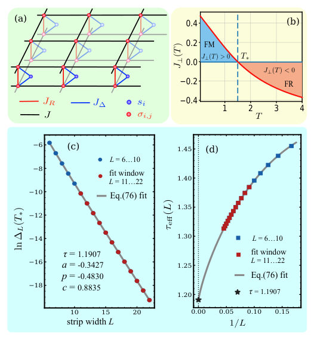
<figcaption class="paper-figure-caption"><b>Fig 1.</b> Figure 1: Decorated bilayer realization and spectral extraction of the interface tension. (a) Schematic representation of the decorated bilayer Ising strip. (b) Effective interlayer coupling J⊥(T) as a function of temperature, showing the crossover between the FM and FR sectors at T = T∗. (c) ln ∆L(T∗) versus strip width L, with the corrected finite-width fit. (d) Effective interface tension τeff(L) = −(T∗/L) ln ∆L(T∗) versus 1/L. Parameters: J = 1, J∆= 1.0, JR ≈ −0.5305, and T∗= 1.5.</figcaption>
</figure>
<figure class="paper-figure-card">
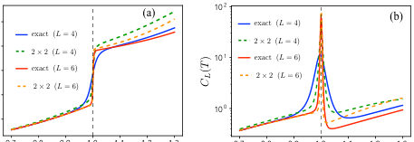
<figcaption class="paper-figure-caption"><b>Fig 2.</b> Figure 2: Thermodynamic signatures of finite-size coexistence. (a) Entropy per site sL(T) as a function of T/T∗for strip widths L = 4 and L = 6, comparing the full transfer-matrix result with the effective two-sector (2 × 2) description. The vertical dashed line indicates the balance temperature T = T∗. (b) Specific heat per site CL(T) on a logarithmic scale for the same strip widths. The sharpening of the entropy crossover and of the specific-heat anomaly with increasing L is consistent with the narrowing of the finite-size coexistence window. Parame- ters: J = 1, J∆= 1.0, JR ≈−0.5305, and T∗= 1.5.</figcaption>
</figure>
<figure class="paper-figure-card">
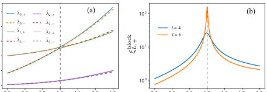
<figcaption class="paper-figure-caption"><b>Fig 3.</b> Figure 3: Low-lying parity towers and block spectral length. (a) Leading nor- malized transfer-matrix eigenvalues ˆλn,+ (solid lines) and ˆλn,−(dashed lines) for L = 4 as functions of T/T∗, where ± denotes the global spin-flip parity. The low-energy spectrum organizes into nearly degenerate parity pairs. (b) Block spectral length ξblock L,+ , defined by Eq. (78), in the even global spin-flip parity block for L = 4 and L = 6. The vertical axis is logarithmic. Parameters: J = 1, J∆= 1.0, JR ≈−0.5305, and T∗= 1.5. Panel (a) reveals the symmetry-resolved organization of the low-energy manifold, whereas panel (b) shows the growth of the longest coexistence-related scale after the global...</figcaption>
</figure>
</div>

<p><strong>Summary.</strong> This paper introduces 'weak irreducibility' as a spectral criterion to differentiate true thermodynamic phase coexistence from pseudo-transitions in finite systems. By analyzing the transfer operator's spectrum, the authors show that genuine coexistence requires the inter-sector connectivity to vanish in the thermodynamic limit. This provides a deep spectral understanding of how finite-size effects round off phase transitions.</p>
<p><strong>Why it may be interesting.</strong> The spectral analysis provides a powerful, non-perturbative tool to characterize the nature of phase transitions, linking spectral properties directly to thermodynamic phase boundaries, which is relevant for understanding quantum critical points and phase separation in many-body systems.</p>
<details>
<summary>Detailed structure</summary>
<p><strong>Main problem.</strong> To establish a rigorous, operator-level criterion to distinguish genuine thermodynamic phase coexistence from mere avoided crossings (pseudo-transitions) in finite-size systems.</p>
<p><strong>Main result.</strong> Genuine phase coexistence emerges as the singular limit where inter-sector connectivity vanishes, leading to a reducible thermodynamic manifold, while pseudo-transitions retain finite connectivity.</p>
<p><strong>Method.</strong> The analysis uses the transfer-matrix formalism, decomposing the operator into sector imbalance and inter-sector connectivity components to analyze the spectral structure.</p>
<p><strong>Model / system.</strong> The study applies to statistical mechanics systems undergoing first-order phase transitions, analyzed using restricted transfer operators for finite transverse width (L).</p>
<p><strong>Key observables.</strong> Sector imbalance, spectral gap (connectivity), and the weak irreducibility of the transfer operator.</p>
<p><strong>Important parameters / regimes.</strong> Finite size (L), temperature (T), and the interface tension ($  au$).</p>
<p><strong>Assumptions / limitations.</strong> The analysis assumes short-range interactions and relies on the Peierls estimate to show exponential suppression of connectivity in $d \ge 2$ systems.</p>
<p><strong>Paper structure.</strong> The paper develops the effective two-sector transfer-operator reduction, introducing imbalance and connectivity coordinates, and then applies this framework to distinguish between pseudo-transitions (finite connectivity) and true coexistence (vanishing connectivity).</p>
</details>
<details>
<summary>Abstract</summary>
<p>Conventional finite-size theories describe first-order coexistence through free-energy competition and interfacial tunneling, but the distinct spectral roles of sector balance and inter-sector connectivity are not usually explicit. We show that pseudo-transitions and thermodynamic phase coexistence are governed by two spectral coordinates: sector imbalance locates balance, while connectivity determines whether that balance remains avoided. At balance, finite connectivity produces a unique dominant state with equal spectral weights in the symmetrized two-sector representation. For short-range systems with positive interface tension, interfacial costs suppress the connectivity exponentially, close the coexistence splitting, and asymptotically restore reducibility. Thus, genuine phase coexistence emerges as the singular limit of finite-size avoided coexistence, whereas one-dimensional pseudo-transitions retain finite connectivity. In a decorated bilayer Ising model, the coexistence gap at independently est</p>
</details>
<p><sub><a href="#top">↑ back to top</a></sub></p>

<p><a id="paper-2608.23769"></a></p>
<h3 id="classification-of-non-hermitian-flat-bands"><a href="http://arxiv.org/abs/2608.23769v1">Classification of Non-Hermitian Flat Bands</a></h3>
<p><strong>Authors:</strong> Chang-geun Oh, Jun-Won Rhim<br>
<strong>Type:</strong> theory · <strong>Category:</strong> strongly correlated electrons · <strong>PDF:</strong> <a href="https://arxiv.org/pdf/2608.23769v1">https://arxiv.org/pdf/2608.23769v1</a><br>
<strong>Analysis basis:</strong> full PDF text, analyzed in chunks
<strong>Topic relevance:</strong> <code>Keldysh / 2PI / non-Gaussian methods</code> <strong>1/5</strong> · <code>analog quantum simulation</code> <strong>1/5</strong> · <code>correlated / nonlocal dissipation</code> <strong>1/5</strong> · <code>driven-dissipative phase transition</code> <strong>1/5</strong> · <code>methods for driven-dissipative</code> <strong>1/5</strong> · <code>non-equilibrium universality</code> <strong>1/5</strong></p>
<div class="figure-strip-hint">↔ Scroll figures horizontally</div>
<div class="paper-figures-scroll">
<figure class="paper-figure-card">
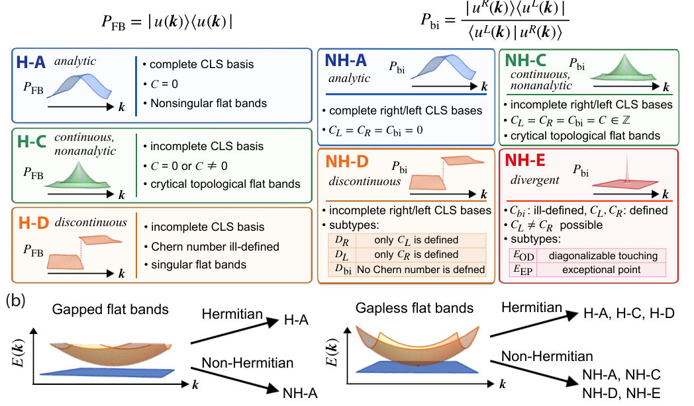
<figcaption class="paper-figure-caption"><b>Fig 1.</b> FIG. 1. Projector-regularity classification of Hermitian and non-Hermitian exact flat bands. (a) Hermitian flat bands are classified by the regularity of the flat-band projector PFB(k): analytic (H-A), continuous but nonanalytic (H-C), and discontinuous (H-D). In non-Hermitian systems, the corresponding classification is governed by the biorthogonal projector Pbi(k), yielding NH-A, NH-C, NH-D, and NH-E. (b) Relation to spectral isolation. A gapped flat band is necessarily analytic (H-A or NH-A), whereas gapless flat bands can realize all Hermitian classes or the NH-A–NH-E hierarchy, depending on the regularity of the corresponding projector.</figcaption>
</figure>
<figure class="paper-figure-card">
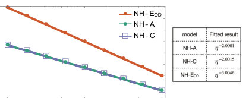
<figcaption class="paper-figure-caption"><b>Fig 2.</b> FIG. 2. Chern-mismatch-induced enhancement of driven in- terorbital transfer. (a)–(c) Band structures of the NH-A, NH-C, and NH-EOD control models (see SM for details). (d)–(f) Magni- tude of the off-diagonal biorthogonal flat-band projector element, |(Pbi)AB(k)|. CL, CR and Cbi indicate left-eigenstate Chern num- ber, right-eigenstate Chern number and biorthogonal Chern num- ber, respectively. (g)–(i) Cross-orbital transfer intensity TB→A(k) at η = 0.1. (j) The maximum transfer intensity T max as a function of damping rate η and the fitted exponents.</figcaption>
</figure>
</div>

<p><strong>Summary.</strong> This paper introduces a comprehensive, projector-based classification system for non-Hermitian flat bands, distinguishing four classes based on the mathematical regularity of the system's biorthogonal projector. The core finding is that the breakdown of projector continuity leads to topological invariants mismatch ($C_R 
eq C_L$), which is directly correlated with an anomalous enhancement in resonant cross-orbital energy transfer.</p>
<p><strong>Why it may be interesting.</strong> The work provides a rigorous mathematical framework linking topological invariants (Chern numbers) to measurable transport phenomena (cross-orbital transfer) in non-Hermitian systems, which is highly relevant for understanding open quantum systems and engineered materials.</p>
<details>
<summary>Detailed structure</summary>
<p><strong>Main problem.</strong> The paper establishes a projector-based classification scheme for non-Hermitian (NH) flat bands, extending known concepts from Hermitian systems.</p>
<p><strong>Main result.</strong> The classification identifies four classes (NH-A, NH-C, NH-D, NH-E) based on the regularity of the biorthogonal projector, showing that topological mismatch ($C_R 
eq C_L$) in the NH-E class leads to anomalous resonant cross-orbital transfer.</p>
<p><strong>Method.</strong> The methodology involves analyzing the mathematical regularity (analyticity, continuity, singularity) of the biorthogonal projector $P_{bi}(k)$ across the Brillouin zone and relating this regularity to topological invariants (Chern numbers) and transport properties.</p>
<p><strong>Model / system.</strong> The study focuses on electronic systems exhibiting flat bands described by non-Hermitian Hamiltonians ($H 
eq H^\dagger$). The analysis compares the behavior of these bands across different mathematical regimes defined by the projector's properties.</p>
<p><strong>Key observables.</strong> Right Chern number ($C_R$), Left Chern number ($C_L$), Biorthogonal Chern number ($C_{bi}$), and the cross-orbital transfer intensity $T_{B	o A}(k)$.</p>
<p><strong>Important parameters / regimes.</strong> The classification depends critically on the regularity of the biorthogonal projector $P_{bi}(k)$ at the band touching points.</p>
<p><strong>Assumptions / limitations.</strong> The analysis is primarily restricted to rank-one flat bands, though generalizations to higher-rank manifolds are mentioned as future work.</p>
<p><strong>Figures summary.</strong> Figures illustrate the comparison between Hermitian and non-Hermitian classifications, showing band structures, projector magnitudes, and the scaling of maximum cross-orbital transfer intensity ($T_{	ext{max}}$) versus damping rate ($\eta$) for different classes.</p>
<p><strong>Paper structure.</strong> The paper first introduces the need for a projector-based classification for NH flat bands. It then details the four classes (NH-A to NH-E) based on projector regularity, linking each class to specific topological invariants and measurable physical responses like cross-orbital transfer scaling.</p>
</details>
<details>
<summary>Abstract</summary>
<p>Exact flat bands provide a versatile setting for correlated and topological phenomena, yet their properties are controlled not only by their dispersion but also by the structure of their Bloch projectors. Here, we establish a projector-based classification of non-Hermitian flat bands. In contrast to Hermitian flat bands, non-Hermiticity introduces a biorthogonal projector whose left-right pairing permits a distinct norm-pole singularity. We identify four classes: analytic NH-A, continuous but nonanalytic NH-C, bounded but discontinuous NH-D, and pole-singular NH-E. We show that continuity of the biorthogonal projector preserves the locking of the right, left, and biorthogonal Chern numbers, $C_R=C_L=C_{\rm bi}$, thereby realizing non-Hermitian critical topological flat bands. Once continuity is lost, this locking can break down; in particular, a mismatch $C_R\neq C_L$ can occur in the NH-E class. Finally, we show that this Chern number mismatch ensures to produce an anomalous enhancement of resonant cross-orbital transfer. Our results establish biorthogonal projector regularity as the organizing principle linking compact localized states, topology, and driven response in non-Hermitian flat bands.</p>
</details>
<p><sub><a href="#top">↑ back to top</a></sub></p>

<p><a id="paper-2608.24755"></a></p>
<h3 id="beyond-capillary-condensation-shear-induced-bridging-transitions-in-patterned-slits"><a href="http://arxiv.org/abs/2608.24755v1">Beyond capillary condensation: Shear-induced bridging transitions in patterned slits</a></h3>
<p><strong>Authors:</strong> Alexandr Malijevský, Andrew O. Parry, Jiří Janek<br>
<strong>Type:</strong> theory · <strong>Category:</strong> statistical mechanics · <strong>PDF:</strong> <a href="https://arxiv.org/pdf/2608.24755v1">https://arxiv.org/pdf/2608.24755v1</a><br>
<strong>Analysis basis:</strong> full PDF text, analyzed in chunks
<strong>Topic relevance:</strong> <code>Frenkel-Kontorova</code> <strong>1/5</strong> · <code>Keldysh / 2PI / non-Gaussian methods</code> <strong>1/5</strong> · <code>analog quantum simulation</code> <strong>1/5</strong> · <code>driven-dissipative phase transition</code> <strong>1/5</strong> · <code>non-equilibrium universality</code> <strong>1/5</strong></p>
<div class="figure-strip-hint">↔ Scroll figures horizontally</div>
<div class="paper-figures-scroll">
<figure class="paper-figure-card">
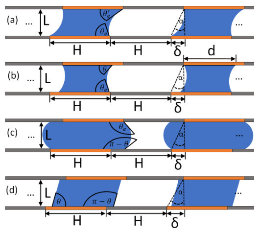
<figcaption class="paper-figure-caption"><b>Fig 1.</b> FIG. 1. A patterned slit of width L with alternating stripes of competing wettability, A (orange) and B (gray), each of width H, laterally displaced by δ. (a) Type I bridging: both menisci are pinned at the patch edges and meet the walls at edge contact angles θe and θ′ e = θe −2α. (b) Type IIA bridging for p &lt; psat: one end of the meniscus is pinned and the other is unpinned meeting patch A with contact angle θ, so that the bridge covers only a length d ≤H. (c) Type-IIB bridging, for p &gt; psat, where the unpinned end meets patch B at angle π −θ. (d) Type III, for p = psat, where the menisci are planar whose ends are unpinned and meet patch A at contact angle θ and patch B at contact angle π...</figcaption>
</figure>
<figure class="paper-figure-card">
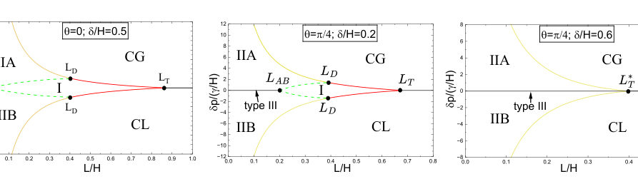
<figcaption class="paper-figure-caption"><b>Fig 2.</b> FIG. 2. Sections of the surface phase diagram showing the phase boundaries separating the stability of the capillary gas (CG), capillary liquid (CL), pinned (type I), and partially pinned (type IIA, B) bridging phases, for different slit widths and pressures: a) maximum contrast b) partial contrast with δ &lt; δ†, c) partial contrast with δ &gt; δ†. For partial contrast, and only at δp = 0, the bridging phases are of type III and the menisci can freely slide until they meet an AB boundary.</figcaption>
</figure>
<figure class="paper-figure-card">
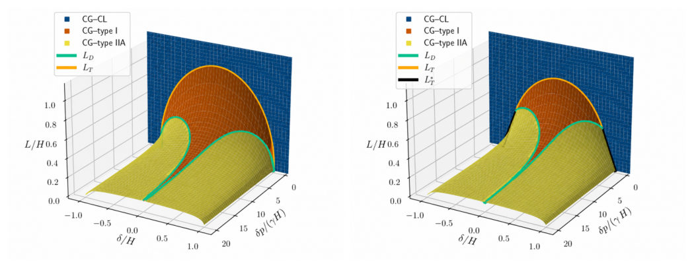
<figcaption class="paper-figure-caption"><b>Fig 3.</b> FIG. 3. Three dimensional phase diagrams showing the surfaces of first-order CG→CL (blue), CG→type I bridge (red) and CG →type IIA (yellow) bridge phases for maximum and partial contrast. The green line is the crossover between type I and type IIA bridging phases. At δp = 0, three-phase coexistence occurs along the orange and black lines between CG, CL and type I and type III bridging phases, respectively. Left: maximum contrast slit (θ = 0); right: partial contrast slit (θ = 30◦).</figcaption>
</figure>
<figure class="paper-figure-card">
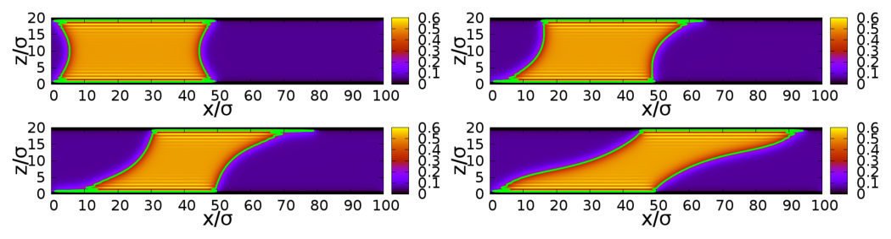
<figcaption class="paper-figure-caption"><b>Fig 4.</b> FIG. 4. DFT equilibrium density profiles for a maximum contrast slit with H = 50 σ, L = 20 σ and increasing shear displace- ments. Each of the these bridging states coexist with a CG phase. For δ = 0, 15, and 45 σ the bridging is of type I involving pinned menisci. For the intermediate shear with δ = 30 σ, the bridging phase is of type II, and only one end is pinned. For the largest shear with δ = 45 σ which corresponds to the triple point where CG, CL and type I bridge coexist, the menisci remain strongly curved, even though the pressure is very close to bulk saturation demonstrating deviations from the macroscopic expectation due to the influence of intermolecular forces.</figcaption>
</figure>
<figure class="paper-figure-card">
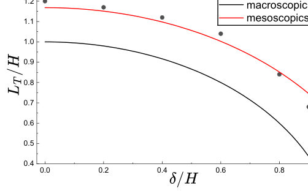
<figcaption class="paper-figure-caption"><b>Fig 5.</b> FIG. 5. Triple-point line LT (δ) for the maximum contrast case (θ = 0) showing the comparison between the macro- scopic, mesoscopic and microscopic DFT results. Mesoscopic results account for long-ranged intermolecular forces which af- fect the surface free-energy of wetting drops and drying bub- bles on the A and B patches.</figcaption>
</figure>
</div>

<p><strong>Summary.</strong> This work theoretically maps the complex phase diagram of a fluid confined between patterned walls subjected to shear. The competition between capillary condensation and interface delocalization forces the formation of novel 'bridging phases.' The research uses generalized Kelvin equations and DFT to predict multiple types of phase transitions, providing detailed insights into how geometry and external fields dictate fluid behavior.</p>
<p><strong>Why it may be interesting.</strong> The study of confined fluids and wetting transitions, especially when coupled with external fields like shear, provides a rich playground for testing theories of phase transitions and interfacial physics, which share conceptual links with many-body systems in external potentials.</p>
<details>
<summary>Detailed structure</summary>
<p><strong>Main problem.</strong> The study investigates the equilibrium phase behavior of a fluid confined within a slit formed by two patterned walls, focusing on the complex transitions induced by external shear.</p>
<p><strong>Main result.</strong> The competition between capillary condensation and interface delocalization leads to an unusually rich phase diagram featuring multiple bridging phases (Type I, IIA, IIB, III) and both first-order and continuous phase transitions.</p>
<p><strong>Method.</strong> The analysis employs generalized Kelvin equations to determine phase boundaries, supplemented by a microscopic density functional model (DFT) to characterize the bridging phases.</p>
<p><strong>Model / system.</strong> The system is a fluid confined in a slit with patterned walls exhibiting competing wetting properties, subjected to a lateral shear displacement. The theoretical framework utilizes the grand potential ($\Omega$) calculated from surface tensions.</p>
<p><strong>Key observables.</strong> Phase identification (CG, CL, bridging phases), phase transition types (first-order/continuous), and the correlation length ($\xi_y$) within the bridging phases.</p>
<p><strong>Important parameters / regimes.</strong> Slit width ($L$), shear displacement ($\delta$), and the wetting contrast ($ heta$). Specific regimes are defined by comparing $L$ and $\delta$ against critical widths like $L_T(\delta)$ and $L_D(\delta)$.</p>
<p><strong>Assumptions / limitations.</strong> The analysis relies on macroscopic descriptions corrected by mesoscopic terms (e.g., logarithmic corrections to the triple line) and uses DFT approximations for the grand potential.</p>
<p><strong>Figures summary.</strong> Figures illustrate the four types of bridging states based on pinning conditions, show surface phase diagrams detailing transitions between gas, liquid, and bridging phases, and compare theoretical predictions for the triple-point line $L_T(\delta)$.</p>
<p><strong>Paper structure.</strong> The paper systematically maps out the phase diagram by analyzing different slit width regimes (e.g., $L > L_T(\delta)$ vs. $L < L_D(\delta)$) under varying shear conditions, deriving specific equations for phase boundaries for each transition type.</p>
</details>
<details>
<summary>Abstract</summary>
<p>We study the equilibrium phase behavior of a fluid confined in a slit made from two patterned walls. Shearing the walls frustrates the fluid, due to a competition between capillary condensation and interface delocalization, forcing the formation of bridging phases with different pinning properties. This leads to an unusually rich phase diagram, displaying first-order and continuous phase transitions, depending sensitively on the slit width and shear. Generalized Kelvin equations determine the phase boundaries, while the bridging phases are characterized by large correlation lengths, predictions for which are tested using a microscopic density functional model.</p>
</details>
<p><sub><a href="#top">↑ back to top</a></sub></p>

<p><a id="paper-2608.24116"></a></p>
<h3 id="weaving-hopfions-from-emergent-monopoles-in-a-chiral-magnet"><a href="http://arxiv.org/abs/2608.24116v1">Weaving Hopfions from Emergent Monopoles in a Chiral Magnet</a></h3>
<p><strong>Authors:</strong> Shoya Kasai, Kotaro Shimizu, Shun Okumura, Yukitoshi Motome<br>
<strong>Type:</strong> theory · <strong>Category:</strong> other · <strong>PDF:</strong> <a href="https://arxiv.org/pdf/2608.24116v1">https://arxiv.org/pdf/2608.24116v1</a><br>
<strong>Analysis basis:</strong> full PDF text, analyzed in chunks
<strong>Topic relevance:</strong> <code>Keldysh / 2PI / non-Gaussian methods</code> <strong>1/5</strong> · <code>driven-dissipative phase transition</code> <strong>1/5</strong> · <code>methods for driven-dissipative</code> <strong>1/5</strong> · <code>non-equilibrium universality</code> <strong>1/5</strong></p>
<div class="figure-strip-hint">↔ Scroll figures horizontally</div>
<div class="paper-figures-scroll">
<figure class="paper-figure-card">
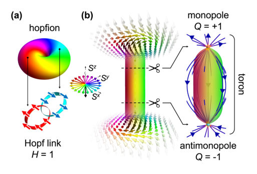
<figcaption class="paper-figure-caption"><b>Fig 1.</b> FIG. 1. (a) A hopfion (top) and its two preimages (bottom). The preimages form a Hopf link that characterizes the hopfion topology with the Hopf number H = 1. (b) A skyrmion tube (left) and a toron (right). The toron is obtained by cutting the skyrmion tube at two points, where an emergent monopole and antimonopole are located. As illustrated by the blue streamlines, these defects serve as a source and a sink of the emergent magnetic field, which carry monopole charges Q = +1 and −1, respectively. The color code placed between (a) and (b) is used throughout this paper to represent spin configurations.</figcaption>
</figure>
<figure class="paper-figure-card">
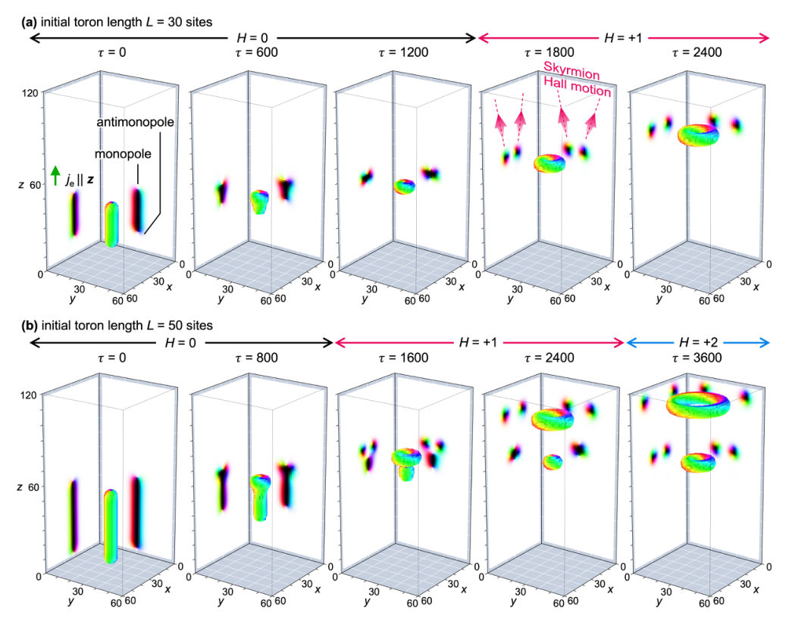
<figcaption class="paper-figure-caption"><b>Fig 2.</b> FIG. 2. Current-driven dynamics of torons with initial lengths: L = 30 in (a) and L = 50 in (b), calculated for je = 0.4 and β = 0.05. Each panel shows the 3D spin structure and its 2D projections. In the 3D views, only regions satisfying Sz ≲0 are displayed, while empty regions correspond to Sz ≃1. The two boundary faces show the 2D configurations at x = 30 and y = 30. In the rightmost panel of (b), the entire structure is shifted by 30 lattice sites along the z direction for clarity.</figcaption>
</figure>
<figure class="paper-figure-card">
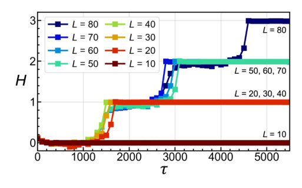
<figcaption class="paper-figure-caption"><b>Fig 3.</b> FIG. 3. Time evolution of the Hopf number in Eq. (1) for different initial toron length L. We set je = 0.4 and β = 0.05.</figcaption>
</figure>
<figure class="paper-figure-card">
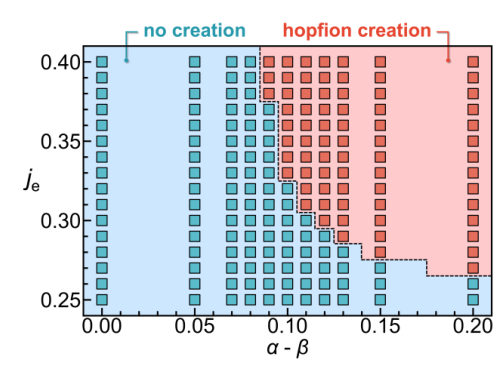
<figcaption class="paper-figure-caption"><b>Fig 4.</b> FIG. 4. Final-state diagram at τ = 7000 for fixed damp- ing α = 0.2. Squares represent simulated parameter sets, while the dashed line denotes the phase boundary. In the red-shaded region, hopfion creation occurs within the simula- tion time range, whereas in the blue-shaded region the MAM annihilates and the system relaxes to a topologically trivial state. The final states are distinguished by calculating the Hopf number in Eq. (1).</figcaption>
</figure>
<figure class="paper-figure-card">
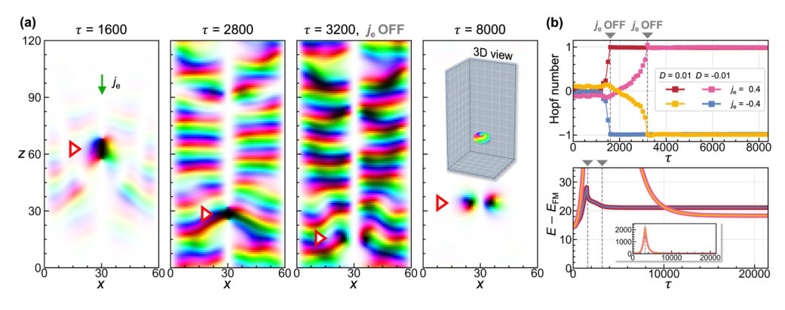
<figcaption class="paper-figure-caption"><b>Fig 5.</b> FIG. 5. (a) The snapshots of the cross section at y = 30 plane during the toron dynamics driven by a pulse current with je = −0.4. The current is switched off at τ = 3200. All simulation conditions except the current direction are the same as those in Fig. 2(a), therefore the initial state is omitted here. The red triangle in each panel marks the position of the tracked spin texture. (b) The upper panel shows the time evolution of the Hopf number for the four combinations of current direction and the sign of the DMI. For the cases shown in red and blue, the current is switched off at τ = 1600 to compare the energy of the created hopfions. The lower panel shows the corresponding time...</figcaption>
</figure>
</div>

<p><strong>Summary.</strong> This work proposes a current-driven mechanism to create magnetic hopfions, which are topologically knotted spin textures, starting from initial magnetic torons. By simulating the dynamics using the LLG equation, the authors show that the annihilation of an emergent monopole-antimonopole pair, induced by an electric current, converts the toron into a hopfion. This establishes a controllable, current-mediated route for generating complex topological states in chiral magnets.</p>
<p><strong>Why it may be interesting.</strong> The study connects macroscopic current-driven dynamics (STT) to the creation of highly non-trivial topological excitations (Hopfions), providing a pathway to study knot theory in condensed matter systems, which is relevant to understanding complex magnetic memory or spintronic devices.</p>
<details>
<summary>Detailed structure</summary>
<p><strong>Main problem.</strong> The primary goal is to establish a controlled, deterministic mechanism for generating magnetic hopfions, which possess complex knotted topology, from simpler magnetic textures like torons.</p>
<p><strong>Main result.</strong> The study demonstrates that applying an electric current drives the annihilation of an emergent monopole-antimonopole pair within a toron, successfully converting it into one or more hopfions.</p>
<p><strong>Method.</strong> The dynamics are simulated by solving the Landau-Lifshitz-Gilbert (LLG) equation, incorporating spin-transfer torque (STT) driven by an external current.</p>
<p><strong>Model / system.</strong> The system is a chiral magnet modeled by a Hamiltonian including exchange, Dzyaloshinskii-Moriya interaction (DMI), and Zeeman coupling. The dynamics are governed by the LLG equation under the influence of STT.</p>
<p><strong>Key observables.</strong> Hopf number (H), which quantifies the knot topology; toron length (L); and the time evolution of the topological invariant.</p>
<p><strong>Important parameters / regimes.</strong> The initial toron length (L) dictates the number of hopfions; the sign of the applied current controls the sign of the Hopf invariant; and the threshold current is sensitive to material parameters.</p>
<p><strong>Assumptions / limitations.</strong> The mechanism relies on the competition between toron length shortening and radial expansion, and the initial state is assumed to be metastable.</p>
<p><strong>Figures summary.</strong> Figures illustrate the hopfion topology and toron structure, show the time evolution of toron dynamics under current for varying initial lengths, and plot the time evolution of the Hopf number to distinguish between trivial annihilation and hopfion generation.</p>
<p><strong>Paper structure.</strong> The paper develops the theoretical framework using the LLG equation, simulates the evolution of torons under current, analyzes the dependence of the final topological state (Hopfion vs. trivial) on initial length and current strength, and concludes by mapping out an experimentally accessible creation pathway.</p>
</details>
<details>
<summary>Abstract</summary>
<p>Recent advances in three-dimensional magnetization imaging techniques have opened new avenues for exploring topological spin textures beyond domain walls and skyrmions. Among them, magnetic hopfions are particularly promising, as their knotted topology is expected to give rise to unconventional dynamics and responses; however, their controlled creation remains challenging. Here we propose a simple mechanism for generating hopfions from magnetic torons, three-dimensional textures hosting an emergent monopole-antimonopole pair. Using Landau-Lifshitz-Gilbert simulations, we show that an electric current drives the annihilation of this pair, converting a toron into a hopfion. The initial toron length determines the number of generated hopfions, while the current direction selects the sign of the Hopf invariant. We further find that the threshold current depends sensitively on material parameters, indicating a close connection to skyrmion dynamics. Our results establish an experimentally accessible route to hopfion creation and reveal a pathway from monopole defects to knotted topological textures.</p>
</details>
<p><sub><a href="#top">↑ back to top</a></sub></p>

<p><a id="paper-2608.24463"></a></p>
<h3 id="anomalous-magnetocaloric-effects-in-the-quasi-one-dimensional-antiferromagnet-bacomath611mathvmath612mathomath613math"><a href="http://arxiv.org/abs/2608.24463v1">Anomalous magnetocaloric effects in the quasi-one-dimensional antiferromagnet BaCo$_2$V$_2$O$_8$</a></h3>
<p><strong>Authors:</strong> Jiahao Yang, Chao Dong, Xinlong Shi, Zhuo Wang, Tiantian Li, Liusuo Wu, Junfeng Wang, Zhangzhen He, Liang Li, Yongkang Luo, Jianda Wu<br>
<strong>Type:</strong> both · <strong>Category:</strong> other · <strong>PDF:</strong> <a href="https://arxiv.org/pdf/2608.24463v1">https://arxiv.org/pdf/2608.24463v1</a><br>
<strong>Analysis basis:</strong> full PDF text, analyzed in chunks
<strong>Topic relevance:</strong> <code>analog quantum simulation</code> <strong>1/5</strong> · <code>methods for driven-dissipative</code> <strong>1/5</strong></p>
<div class="figure-strip-hint">↔ Scroll figures horizontally</div>
<div class="paper-figures-scroll">
<figure class="paper-figure-card">
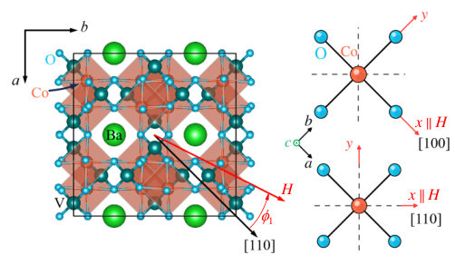
<figcaption class="paper-figure-caption"><b>Fig 1.</b> FIG. 1. Crystalline structure of BaCo2V2O8 and geometry for the transverse-field directions H ∥[110] and H ∥[100] relative to the screw-chain local axes.</figcaption>
</figure>
<figure class="paper-figure-card">
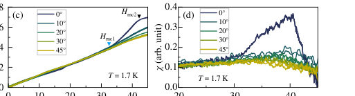
<figcaption class="paper-figure-caption"><b>Fig 2.</b> FIG. 2. Experimental MCE and magnetization data of BaCo2V2O8 under magnetic field. The angle ϕ1 = 0◦de- notes H ∥[110] and ϕ1 = 45◦denotes H ∥[100]. (a) For H ∥[110], the temperature-dependent MCE data show that a single broad dip evolves into two dips (Hmc1 and Hmc2) as the temperature is lowered. (b) The T0 = 1.6 K MCE at var- ious angles. The curves are vertically shifted for clarity. (c) Angle-dependent magnetization (M) and (d) the correspond- ing magnetic susceptibility (χ = dM/dH) with high-field fea- tures near [110].</figcaption>
</figure>
<figure class="paper-figure-card">
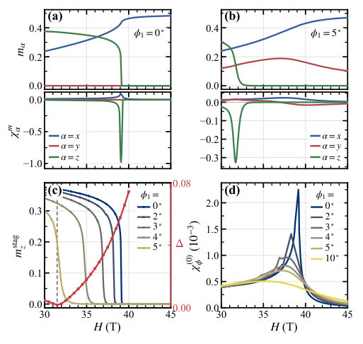
<figcaption class="paper-figure-caption"><b>Fig 3.</b> FIG. 3. Magnetization, magnetic susceptibility and gener- alized susceptibility of the screw-chain XXZ model at zero- temperature. (a), (b) Uniform transverse magnetization mx, staggered components mstag y and mstag z , and their field deriva- tives χm α for ϕ1 = 0◦and 5◦, respectively. (c) Field depen- dence of mstag z for various ϕ1. The red line shows the exci- tation gap ∆for ϕ1 = 5◦, whose minimum (vertical dashed line) follows the collapse of mstag z at Hthr 1 . (d) Generalized susceptibility χ(0) ϕ for selected angles, showing the high-field response that defines Hthr 2 .</figcaption>
</figure>
<figure class="paper-figure-card">
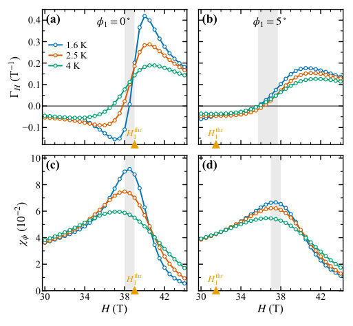
<figcaption class="paper-figure-caption"><b>Fig 4.</b> FIG. 5. Finite-temperature Gr¨uneisen ratio ΓH (a,b) and susceptibility (c,d) of the screw-chain XXZ model for ϕ1 = 0◦(left) and 5◦(right). Gray bands mark the lowest- temperature ΓH sign-change regions and the corresponding lowest-temperature χϕ peak regions. Orange triangles mark the expected Ising transition fields Hthr 1 .</figcaption>
</figure>
<figure class="paper-figure-card">
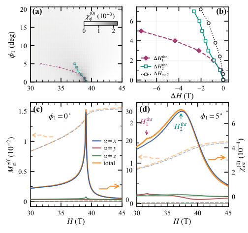
<figcaption class="paper-figure-caption"><b>Fig 5.</b> FIG. 4. Angular evolution and component-resolved response of the screw-chain XXZ model at zero temperature. (a) In- tensity map of the generalized susceptibility χ(0) ϕ . Magenta diamonds and teal open squares mark Hthr 1 and Hthr 2 , respec- tively. (b) Angular shifts ∆Hi(ϕ1) = Hi(ϕ1) −Hi(0) of Hthr 1 , Hthr 2 , and the experimental Hmc2 values from Fig. 2(b). Black open circles mark the experimental data. (c),(d) Hellmann– Feynman decompositions of M (0) ϕ (dashed curves, left axes)</figcaption>
</figure>
</div>

<p><strong>Summary.</strong> This paper investigates the magnetocaloric effect in the quasi-1D antiferromagnet BaCo2V2O8 by combining angle-resolved measurements with advanced tensor-network simulations. The research distinguishes between the field associated with the Ising critical point and a higher-field transverse response. It concludes that the MCE can be engineered by tailoring anisotropic Zeeman couplings, opening a route for magnetic cooling in quantum magnets.</p>
<p><strong>Why it may be interesting.</strong> The work provides a detailed study of magnetic phase transitions and thermodynamic responses in a highly anisotropic quantum magnet, which is relevant for understanding magnetic field control over quantum ground states.</p>
<details>
<summary>Detailed structure</summary>
<p><strong>Main problem.</strong> To determine whether the anomalous magnetocaloric effect (MCE) in the quasi-1D antiferromagnet BaCo2V2O8 is governed by the intrinsic Ising critical field or by transverse spin fluctuations when the applied magnetic field is rotated.</p>
<p><strong>Main result.</strong> The dominant MCE response persists away from the intrinsic Ising critical region, suggesting that magnetic cooling can be achieved by engineering anisotropic Zeeman-coupling configurations in quantum magnets.</p>
<p><strong>Method.</strong> The study combines angle-resolved MCE measurements with tensor-network calculations (DMRG) on an effective XXZ spin chain model.</p>
<p><strong>Model / system.</strong> The system is the quasi-one-dimensional Ising-like antiferromagnet BaCo2V2O8, modeled by an effective spin-1/2 XXZ chain Hamiltonian incorporating site-dependent Zeeman couplings due to the material's geometry and anisotropic g-tensor.</p>
<p><strong>Key observables.</strong> Magnetocaloric effect (MCE), magnetic Grüneisen ratio ($\Gamma_H$), Ising critical field ($H_{	ext{thr1}}$), and high-field temperature minimum ($H_{	ext{mc2}}$).</p>
<p><strong>Important parameters / regimes.</strong> Applied magnetic field up to 45 T, temperature range around 1.6 K, and field rotation angles ($\phi_1$).</p>
<p><strong>Assumptions / limitations.</strong> The system can be effectively described by an XXZ chain model, and DMRG methods are used to calculate ground state and finite-temperature properties.</p>
<p><strong>Figures summary.</strong> Figures illustrate the crystal structure and geometry for different field directions, showing experimental MCE dips and angle-dependent magnetization/susceptibility data.</p>
<p><strong>Paper structure.</strong> The paper progresses by establishing the physical model and experimental measurements, then using theoretical calculations (DMRG) to analyze the field dependence of various magnetic order parameters and thermodynamic quantities, culminating in a comparison between the theoretical and experimental findings regarding the MCE source.</p>
</details>
<details>
<summary>Abstract</summary>
<p>We investigate the transverse-field thermodynamics of the quasi-one-dimensional Ising-like antiferromagnet BaCo$_2$V$_2$O$_8$, whose tilted screw-chain geometry and anisotropic Landé $g$ tensor generate spatially modulated Zeeman couplings. Angle-resolved magnetocaloric-effect (MCE) measurements reveal a high-field temperature minimum near the transverse-field Ising critical field for $H\parallel[110]$ that persists and shifts only weakly upon field rotation. Tensor-network calculations show that the rotation-induced staggered transverse field rapidly lowers the Ising critical field and that the magnetic Grüneisen ratio changes sign near the high-field temperature minimum, consistent with experiment. Our results establish that a dominant MCE response can persist away from the Ising critical region, suggesting a route to magnetic cooling by tailoring anisotropic Zeeman-coupling configurations in quantum magnets.</p>
</details>
<p><sub><a href="#top">↑ back to top</a></sub></p>

<p><a id="paper-2608.24382"></a></p>
<h3 id="exact-autoregressive-sampling-of-planar-ising-spin-glasses-via-the-kac-ward-theory"><a href="http://arxiv.org/abs/2608.24382v1">Exact autoregressive sampling of planar Ising spin glasses via the Kac--Ward theory</a></h3>
<p><strong>Authors:</strong> Jing Liu, Tao Chen, Tianrui Che, Lei Wang, Youjin Deng, Pan Zhang<br>
<strong>Type:</strong> theory · <strong>Category:</strong> disordered systems and neural networks · <strong>PDF:</strong> <a href="https://arxiv.org/pdf/2608.24382v1">https://arxiv.org/pdf/2608.24382v1</a><br>
<strong>Analysis basis:</strong> full PDF text, analyzed in chunks
<strong>Topic relevance:</strong> <code>analog quantum simulation</code> <strong>1/5</strong> · <code>methods for driven-dissipative</code> <strong>1/5</strong></p>
<div class="figure-strip-hint">↔ Scroll figures horizontally</div>
<div class="paper-figures-scroll">
<figure class="paper-figure-card">
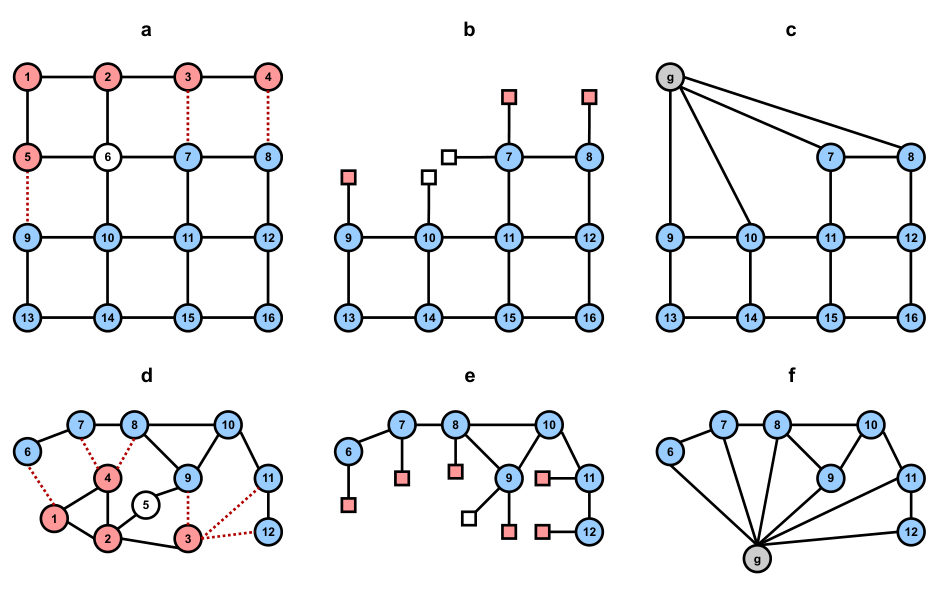
<figcaption class="paper-figure-caption"><b>Fig 1.</b> FIG. 1. Schematic illustration of the exact autoregressive sampling algorithm via the Kac–Ward formula. (a) Snapshot of the sampling process on a 4 × 4 square lattice using a raster-scan order. The spins are partitioned into three sets: the frozen spins s&lt;i (red), the current spin si being sampled (white), and the unsampled spins s&gt;i (blue). The interactions between the frozen spins and the unsampled spins induce effective local fields on the boundary sites (dashed red lines). (b) The subgraph described by Eq. (10). (c) The auxiliary spin construction. To evaluate the partition functions Q± i in (b) using the Kac–Ward formula, the effective local fields are replaced by pairwise couplings to...</figcaption>
</figure>
<figure class="paper-figure-card">
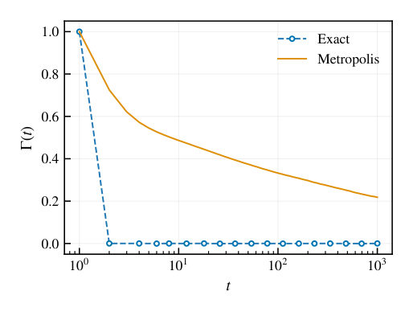
<figcaption class="paper-figure-caption"><b>Fig 2.</b> FIG. 2. Autocorrelation function Γ(t) of the energy for the 2D EA spin glass. The simulation was performed on a 16×16 lattice at temperature T = 0.5 (β = 2). The Metropolis al- gorithm (orange) shows a stretched exponential decay, while the exact autoregressive sampler (blue) yields Γ(t) = δt,0, con- firming strictly i.i.d. samples. The disorder realizations are taken from Ref. [24]. Data are averaged over 100 independent runs.</figcaption>
</figure>
<figure class="paper-figure-card">
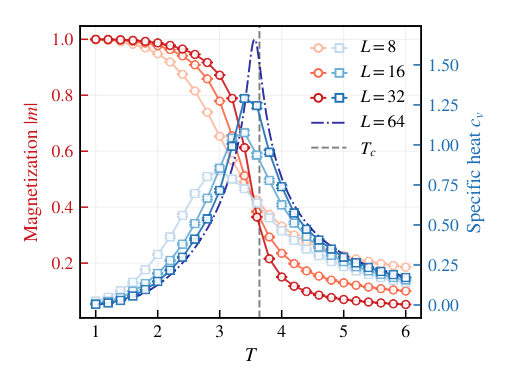
<figcaption class="paper-figure-caption"><b>Fig 3.</b> FIG. 3. Validation on the triangular FM Ising model. The magnetization per spin |m| (red, left axis) and the specific heat per spin cv (blue, right axis) are plotted as a function of temperature T. The values are estimated on 10 000 i.i.d. samples. The specific heat curve for L = 64 is obtained by directly differentiating ln Z with respect to temperature. The vertical dotted line indicates the theoretical critical tempera- ture Tc = 4J/ ln 3 ≈3.641.</figcaption>
</figure>
<figure class="paper-figure-card">
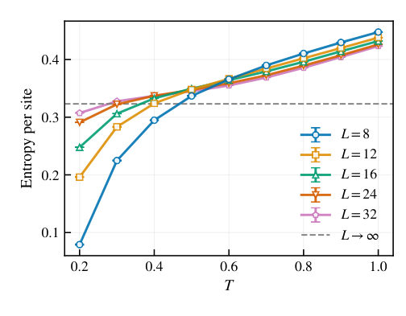
<figcaption class="paper-figure-caption"><b>Fig 4.</b> FIG. 4. Direct entropy estimation via exact likelihoods. Tem- perature dependence of the entropy per site for the triangular AFM Ising model with system sizes L = 8 to 32. The hor- izontal dashed line marks the theoretical zero-temperature residual entropy (S0 ≈0.323).</figcaption>
</figure>
</div>

<p><strong>Summary.</strong> This paper presents an exact autoregressive sampling algorithm for planar Ising spin glasses by creatively adapting the Kac--Ward theory. It overcomes the mathematical hurdles posed by boundary fields in conditional probability calculations using an auxiliary spin construction. The resulting method generates perfectly uncorrelated samples, offering a crucial, exact benchmark for validating approximate machine learning samplers in disordered systems.</p>
<p><strong>Why it may be interesting.</strong> While focused on classical statistical mechanics, the development of an exact, non-Markovian sampling technique that provides a rigorous benchmark for neural samplers is highly relevant to developing robust generative models for complex physical systems.</p>
<details>
<summary>Detailed structure</summary>
<p><strong>Main problem.</strong> The primary challenge is achieving exact sampling from the Boltzmann distribution of spin glasses, as standard MCMC methods suffer from critical slowing down, and modern neural samplers are only approximate.</p>
<p><strong>Main result.</strong> The authors developed an exact autoregressive sampling algorithm that generates strictly i.i.d. samples with exact normalized likelihoods, providing a rigorous baseline for benchmarking machine learning samplers.</p>
<p><strong>Method.</strong> The method adapts the Kac--Ward theory by introducing a planarity-preserving auxiliary spin construction to map the conditional partition functions, which are otherwise corrupted by boundary fields, into an extended zero-field Ising model solvable by a determinant formula.</p>
<p><strong>Model / system.</strong> The system studied is the planar Ising spin glass, governed by the Hamiltonian E(s) = -sum<i,j> J_ij s_i s_j. The analysis is applied to specific cases like the triangular AFM Ising model.</p>
<p><strong>Key observables.</strong> Autocorrelation function (expected to be delta-correlated, $\delta_{t,0}$), Entropy (S), Magnetization (|m|), and Specific Heat (c_v).</p>
<p><strong>Important parameters / regimes.</strong> Temperature (T), system size (N), and the coupling constants J_ij.</p>
<p><strong>Assumptions / limitations.</strong> The method relies critically on the planarity of the underlying graph structure and the successful construction of the auxiliary spin to maintain solvability.</p>
<p><strong>Figures summary.</strong> Figures illustrate the sampling process using auxiliary spins, compare autocorrelation functions (Metropolis vs. exact sampler), and show temperature dependence of observables like entropy and specific heat.</p>
<p><strong>Paper structure.</strong> The paper establishes the difficulty of exact sampling, introduces the Kac--Ward theory framework, details the novel auxiliary spin construction to handle boundary fields, derives the conditional probabilities via determinant ratios, and finally validates the method by calculating observables like entropy and comparing autocorrelation functions.</p>
</details>
<details>
<summary>Abstract</summary>
<p>Exact sampling from the Boltzmann distribution of spin glasses remains an outstanding challenge: Markov chain Monte Carlo methods suffer from critical slowing down and metastable trapping, while modern neural autoregressive samplers such as variational autoregressive networks are approximate and, in the absence of exact reference samples, cannot be rigorously benchmarked. Here we present an exact autoregressive sampling algorithm for planar Ising spin glasses based on the Kac--Ward theory. Under the chain-rule factorization, sequentially fixing spins induces boundary-localized external fields, which destroy the zero-field structure required for exact evaluation. By encoding these fields with a planarity-preserving auxiliary spin construction, the conditional partition functions are mapped to an extended zero-field Ising model and exactly evaluated using the Kac--Ward determinant formula. The method generates strictly independent and identically distributed samples with exact normalized likelihoods at a computational cost of $\mathcal{O}(N^{5/2})$ for $N$ spins, thereby providing an exact baseline for benchmarking neural autoregressive samplers.</p>
</details>
<p><sub><a href="#top">↑ back to top</a></sub></p>

<p><a id="paper-2608.24867"></a></p>
<h3 id="fast-generation-of-spectrally-shaped-disorder-on-the-sphere"><a href="http://arxiv.org/abs/2608.24867v1">Fast generation of spectrally-shaped disorder, on the sphere</a></h3>
<p><strong>Authors:</strong> Mathias Casiulis, Stefano Martiniani<br>
<strong>Type:</strong> theory · <strong>Category:</strong> disordered systems and neural networks · <strong>PDF:</strong> <a href="https://arxiv.org/pdf/2608.24867v1">https://arxiv.org/pdf/2608.24867v1</a><br>
<strong>Analysis basis:</strong> full PDF text, analyzed in chunks
<strong>Topic relevance:</strong> <code>analog quantum simulation</code> <strong>1/5</strong> · <code>interference shaping light</code> <strong>1/5</strong></p>
<div class="figure-strip-hint">↔ Scroll figures horizontally</div>
<div class="paper-figures-scroll">
<figure class="paper-figure-card">
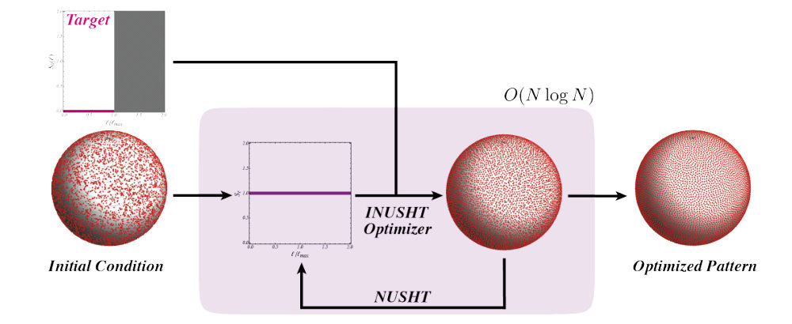
<figcaption class="paper-figure-caption"><b>Fig 1.</b> FIG. 1. Sketch of the algorithm. We initialize the point pattern from a Poisson point pattern on the sphere and set a target over a finite amount of ℓmodes (ℓ≤ℓmax). The power spectrum Sℓis computed using a NUSHT, then the gradients of the loss using the inverse transform (INUSHT), which is used to update positions within a gradient-based optimizer (here, L-BFGS). One such step takes O(N log N) operations. Steps are repeated until a convergence criterion is met, yielding the optimized pattern.</figcaption>
</figure>
<figure class="paper-figure-card">
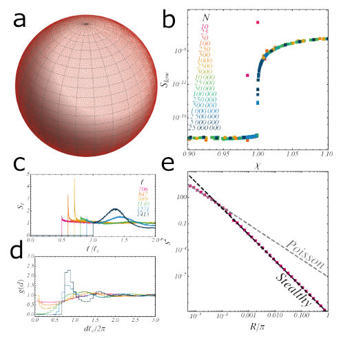
<figcaption class="paper-figure-caption"><b>Fig 2.</b> FIG. 2. Stealthy hyperuniformity on the sphere. (a) Example stealthy hyperuniform pattern on the sphere, ob- tained for N = 105 points and ℓmax = 446, corresponding to χ ≈0.999. (b) Arithmetic average Slow of the final Sℓ in the constrained region against χ, across system sizes. (c) Final power spectra for N = 106 points and a few ℓmax val- ues given in inset. The x axis is rescaled by ℓc, the value of ℓmax that yields χ = 1. (d) Corresponding (spherical) radial distribution functions at a distance d. The x axis is rescaled to have the first feature around x = 1. (e) Reduced vari- ance s2 = var(nR)/E[nR]2 against the radius R of the ran- dom spherical caps used in the calculation (here...</figcaption>
</figure>
<figure class="paper-figure-card">
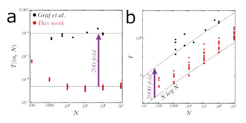
<figcaption class="paper-figure-caption"><b>Fig 3.</b> FIG. 3. Benchmark. (a) Total optimization time T, in seconds, divided by the number of gradient evaluations ne and by the number of particles N. Our data (red symbols) was obtained across values of χ from 0.5 to 1 at each N. Black symbols represent times reported in Ref. 51. We highlight the asymptote of FaSHIoNPOp data by a dashed line, and a plausible line going through Gr¨af’s and Pott’s data [51]. (b) Raw time, in seconds, for the same data. We highlight with dashed lines plausible N log N scaling that capture the lower- end of both datasets.</figcaption>
</figure>
<figure class="paper-figure-card">
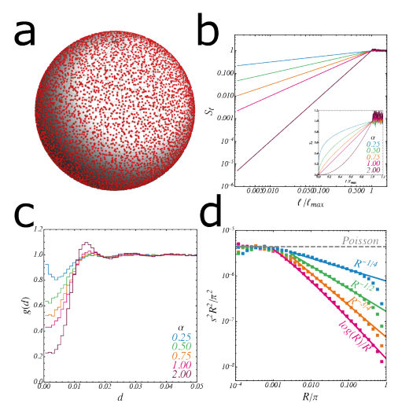
<figcaption class="paper-figure-caption"><b>Fig 4.</b> FIG. 4. Power-law hyperuniformity. (a) Example opti- mized structure for N = 104 points with a power law Sℓ∝ℓ up to ℓmax = 140 (χ ≈1). (b) Final power spectra Sℓin log- log scale for N = 105 for constraints Sℓ∝ℓα up to ℓmax = 446 (χ ≈1) for α values 0.25, 0.5, 0.75, 1, 2. Inset: linear-scale plots of the same curves. (c) Corresponding radial distribu- tion functions. (d) Corresponding discrepancy measurements, here rescaled as s2R2/π2 to highlight R−α decays (continuous lines), and the log(R)/R decay for α = 1. The α = 2 case is here omitted to make the α = 1 decay more visible.</figcaption>
</figure>
<figure class="paper-figure-card">
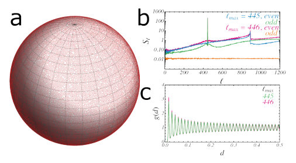
<figcaption class="paper-figure-caption"><b>Fig 5.</b> FIG. 5. Gyromorphs. (a) Example gyromorph with N ≈ 105 and ℓmax = 446. (b) Log-scale power spectrum of opti- mized structures with N ≈105 for ℓmax = 445, split between the even (blue) and odd (green) ℓvalues, and for ℓmax = 446, split between the even (red) and odd (orange) ℓvalues. (c) Corresponding radial distribution functions for ℓmax = 445 (green) and ℓmax = 446 (red), against the distance d in radi- ans.</figcaption>
</figure>
</div>

<p><strong>Summary.</strong> This work presents FaSHIoNPOp, a novel algorithm for designing point patterns on the sphere by enforcing desired spectral properties using spherical harmonics. It extends powerful spectral optimization techniques from flat space to curved manifolds, enabling applications in photonics and optimal sampling. The method achieves high efficiency ($O(N \log N)$) while allowing control over complex physical properties like hyperuniformity.</p>
<p><strong>Why it may be interesting.</strong> The development of spectral optimization techniques for curved spaces provides a powerful, general tool for designing structured matter or optimal sampling configurations, which has analogues in designing quantum metamaterials or optimizing quantum state preparation.</p>
<details>
<summary>Detailed structure</summary>
<p><strong>Main problem.</strong> The paper addresses the challenge of designing disordered point patterns with specific spectral properties on curved manifolds, specifically the sphere.</p>
<p><strong>Main result.</strong> They introduce FaSHIoNPOp, an algorithm that successfully extends spectral optimization methods from flat Euclidean space to the sphere with $O(N \log N)$ complexity.</p>
<p><strong>Method.</strong> The method uses an optimization framework based on enforcing target power spectra ($S_0(\ell)$) by minimizing a loss function derived from the Spherical Harmonics Transform (SHT).</p>
<p><strong>Model / system.</strong> The system is point patterns distributed on the unit 2-sphere ($S \subset \mathbb{R}^3$). Applications include designing photonic coatings and sampling on curved manifolds.</p>
<p><strong>Key observables.</strong> Power Spectrum ($S_\ell$), Radial Distribution Function ($g(	heta)$), Constraint Count ($\chi$), and Reduced Variance ($s^2$).</p>
<p><strong>Important parameters / regimes.</strong> Number of points ($N$), maximum constrained mode ($\ell_{	ext{max}}$), and the target spectral coefficients ($S_0(\ell)$).</p>
<p><strong>Assumptions / limitations.</strong> The optimization relies on fast, non-uniform spherical harmonics transforms (NUSHTs) and assumes small steps during gradient-based updates, projecting positions back onto the sphere.</p>
<p><strong>Figures summary.</strong> Figures illustrate the algorithm flow (Initialization $    o$ SHT $    o$ Gradient $   o$ Update), and show results like the generation of hyperuniform structures ($S_\ell=0$ for $\ell \le \ell_{	ext{max}}$) and the scaling of reduced variance ($s^2$).</p>
<p><strong>Paper structure.</strong> The paper systematically develops the theory by first establishing the spectral optimization framework on the sphere, deriving the necessary gradient calculations for the loss function, and then applying this machinery to generate and characterize specific disordered states like hyperuniform structures.</p>
</details>
<details>
<summary>Abstract</summary>
<p>The design of disordered point patterns with desirable properties is an exciting and ongoing research endeavor, with applications ranging from materials to computer science. A successful approach in recent years has been the optimization of point patterns through a loss function that enforces properties in their Fourier-space representation. Yet, these methods have so far strictly been limited to flat Euclidean space, precluding their use in the contexts of coatings of curved surfaces for photonics, or of sampling of curved manifolds for instance. We introduce FaSHIoNPOp, an algorithm that relies on fast non-uniform spherical harmonics transforms, to enforce pair correlations in point patterns on the sphere with an $O(N \log N)$ complexity in $N$ the number of points. Having demonstrated its performance, we showcase applications of FaSHIoNPOp, ranging from the generation of hyperuniform structures on the sphere for sampling and physical applications, to the design of gyromorphs (disordered structures with maximal scattering power at a given frequency) on the sphere. We additionally show that FaSHIoNPOp can be combined to both global constraints like centrosymmetry, with applications to the design of more isotropic $3d$ gyromorphs, and local real-space constraints like pair repulsion. Our work paves the way for optimal sampling and coating design on curved manifolds, with many applications across physics, materials and computer science.</p>
</details>
<p><sub><a href="#top">↑ back to top</a></sub></p>

<p><a id="paper-2608.24494"></a></p>
<h3 id="optimal-quantum-algorithm-for-ground-state-energy-estimation-with-a-guiding-state"><a href="http://arxiv.org/abs/2608.24494v1">Optimal Quantum Algorithm for Ground-State Energy Estimation with a Guiding State</a></h3>
<p><strong>Authors:</strong> Stacey Jeffery, Freek Witteveen<br>
<strong>Type:</strong> theory · <strong>Category:</strong> quantum information and computing · <strong>PDF:</strong> <a href="https://arxiv.org/pdf/2608.24494v1">https://arxiv.org/pdf/2608.24494v1</a><br>
<strong>Analysis basis:</strong> full PDF text, analyzed in chunks
<strong>Topic relevance:</strong> <code>analog quantum simulation</code> <strong>1/5</strong> · <code>quantum measurements</code> <strong>1/5</strong></p>
<div class="figure-strip-hint">↔ Scroll figures horizontally</div>
<div class="paper-figures-scroll">
<figure class="paper-figure-card">
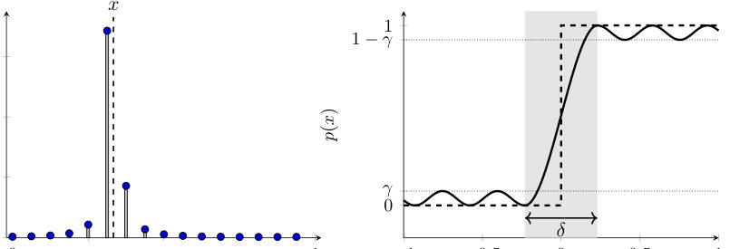
<figcaption class="paper-figure-caption"><b>Fig 1.</b> Figure 1: An illustration of why previous approaches incur a log(1/γ) overhead. (a) In n-bit quantum phase estimation, if the true phase x does not have an exact n-bit binary representation, then the measurement distribution is spread over multiple outcomes and has nonzero tails. Sup- pressing the probability of a bad estimate below the signal level γ leads to logarithmic overhead. (b) In a QSVT-based approach, one approximates an ideal step function by a polynomial. The transition width must be at most δ, while the ripple size away from the transition must be at most γ. Achieving both requires degree Θ(δ−1 log(1/γ)).</figcaption>
</figure>
<figure class="paper-figure-card">
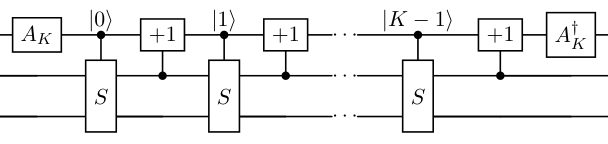
<figcaption class="paper-figure-caption"><b>Fig 2.</b> Figure 2: The quantum algorithm in Theorem 2.5 that approximately implements US. Here K is a register with basis |0⟩, . . . , |K −1⟩where K is the number of calls the algorithm makes to S, and P is a qubit register that controls whether D is interpreted as H or L (so H ⊕L ⊆P ⊗D). AK is a unitary such that AK|0⟩= 1/ √</figcaption>
</figure>
<figure class="paper-figure-card">
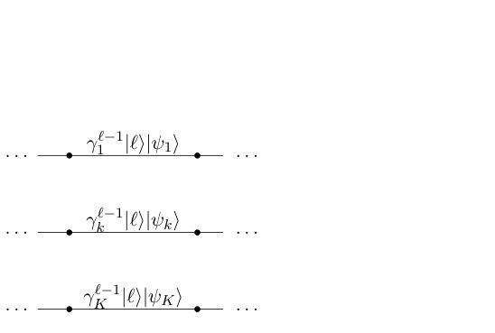
<figcaption class="paper-figure-caption"><b>Fig 3.</b> Figure 4: Visualization of the transducer for decision phase estimation.</figcaption>
</figure>
<figure class="paper-figure-card">
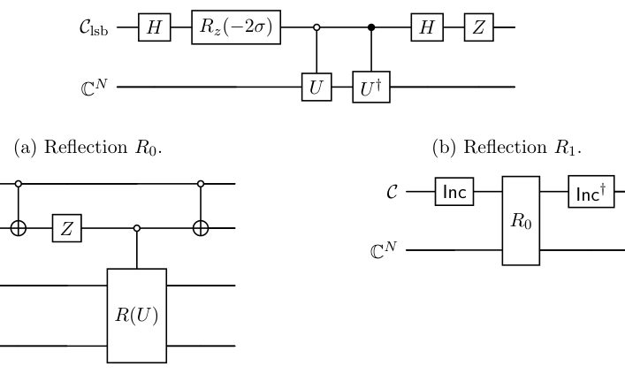
<figcaption class="paper-figure-caption"><b>Fig 4.</b> Figure 5: Circuit implementations of the two reflections R0 and R1, where Rz(−2σ) = eiσZ. In (a) we decompose a binary expansion of the basis of system C in its least significant bit and the remainder, and insert an auxiliary qubit D in between. The CNOTs with open control on the infinite-dimensional Crest flip the auxiliary system if the state is |0⟩. These, and Inc and its adjoint in (b), are the only infinite-dimensional operations.</figcaption>
</figure>
<figure class="paper-figure-card">
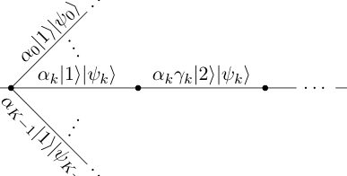
<figcaption class="paper-figure-caption"><b>Fig 5.</b> Figure 6: Visualization of the transducer for threshold max eigenphase. It can be seen as a composition of the transducers visualized in Figure 3 and Figure 4, with an extra edge |¯1, 0⟩ added, whose purpose is to make the transducer canonical, by ensuring that the boundary is orthogonal to the space acted on by the oracle.</figcaption>
</figure>
</div>

<p><strong>Summary.</strong> This paper develops an optimal quantum algorithm for estimating the ground-state energy of a system, which is mathematically equivalent to finding the largest eigenphase of the system's time-evolution unitary. By utilizing quantum transducers, the authors eliminate a previously unavoidable logarithmic overhead factor related to the guiding state overlap ($\gamma$), achieving a query complexity that matches theoretical lower bounds.</p>
<p><strong>Why it may be interesting.</strong> This work provides a significant algorithmic improvement for a fundamental problem in quantum simulation, directly impacting the feasibility of quantum chemistry and condensed matter simulations on near-term quantum hardware.</p>
<details>
<summary>Detailed structure</summary>
<p><strong>Main problem.</strong> The paper addresses the quantum algorithm for estimating the ground-state energy of a Hamiltonian, which is equivalent to estimating the largest eigenphase of the time-evolution unitary operator $U$ in a guided setting.</p>
<p><strong>Main result.</strong> The authors present a quantum algorithm that achieves a query complexity for the guided ground-state energy estimation that matches the established lower bound, improving upon previous methods by eliminating a $\log(1/\gamma)$ overhead.</p>
<p><strong>Method.</strong> The core method involves designing and composing exact quantum transducers for the decision versions of phase estimation and amplitude amplification, allowing for efficient composition of subroutines.</p>
<p><strong>Model / system.</strong> The problem is framed using a general Hamiltonian $H$ and its time-evolution unitary $U = e^{-iH}$. The estimation is guided by an initial state $|\psi
angle$ that has a guaranteed overlap $\gamma$ with the ground state space.</p>
<p><strong>Key observables.</strong> Ground state energy ($E_0$), largest eigenphase ($x_0$), and the unitary operator $U$.</p>
<p><strong>Important parameters / regimes.</strong> Overlap parameter $\gamma$, desired precision $\delta$, and the error parameter $\epsilon$.</p>
<p><strong>Assumptions / limitations.</strong> The analysis relies on the efficient composition properties of transducers and the ability to solve the problem via binary search on the threshold eigenphase problem.</p>
<p><strong>Figures summary.</strong> Figure 1 illustrates the source of previous $\log(1/\gamma)$ overheads in QPE and QSVT. Figure 8 shows the interval update process during one round of the search algorithm.</p>
<p><strong>Paper structure.</strong> The paper develops the algorithm by first solving the decision version (threshold problem) using transducers, which is then embedded into a binary search framework to achieve the final complexity bounds for the max eigenphase estimation.</p>
</details>
<details>
<summary>Abstract</summary>
<p>In the problem of ground-state energy estimation, one aims to estimate the smallest eigenvalue of a Hamiltonian, often given a guiding state, with some promised overlap $γ$ with the ground space. The main approach to this problem is to simulate its evolution, and estimate the smallest (or equivalently, largest) eigenphase of the resulting unitary $U$. We give a quantum algorithm that estimates the largest eigenphase of a unitary $U$ in this guided setting using a factor of $\log\frac{1}γ$ fewer queries to $U$ than the previous best approach. The result matches an existing lower bound, and answers an open question from Mande and de Wolf. The algorithm is based on transducers, which often allow composition of quantum algorithms without overhead from error reduction.</p>
</details>
<p><sub><a href="#top">↑ back to top</a></sub></p>

<p><a id="paper-2608.24838"></a></p>
<h3 id="accidental-accuracy-and-vertex-corrections-in-math662math-exact-benchmarks-for-the-extended-hubbard-model"><a href="http://arxiv.org/abs/2608.24838v1">Accidental accuracy and vertex corrections in $GW$: Exact benchmarks for the extended Hubbard model</a></h3>
<p><strong>Authors:</strong> Michael O. Atambo<br>
<strong>Type:</strong> theory · <strong>Category:</strong> strongly correlated electrons · <strong>PDF:</strong> <a href="https://arxiv.org/pdf/2608.24838v1">https://arxiv.org/pdf/2608.24838v1</a><br>
<strong>Analysis basis:</strong> full PDF text, analyzed in chunks
<strong>Topic relevance:</strong> <code>analog quantum simulation</code> <strong>1/5</strong></p>
<div class="figure-strip-hint">↔ Scroll figures horizontally</div>
<div class="paper-figures-scroll">
<figure class="paper-figure-card">
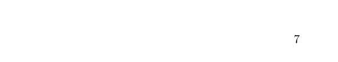
<figcaption class="paper-figure-caption"><b>Fig 1.</b> FIG. 2. Fundamental gap ∆/t versus U/t for the N = 6 ring at V = 0: exact ED (circles) versus static G0W0 (squares). The exact gap grows linearly in the Mott regime while GW saturates. Inset: relative error.</figcaption>
</figure>
<figure class="paper-figure-card">
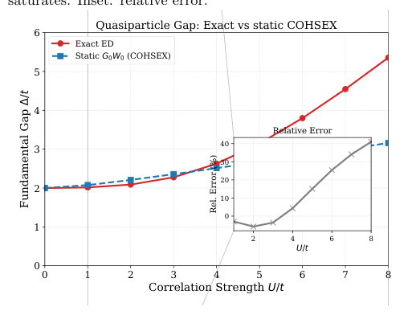
<figcaption class="paper-figure-caption"><b>Fig 2.</b> FIG. 3. Channel analysis at V = 0: exact gap versus GW with electron–hole ladder polarization (under-correction), and versus static local self-energy vertex (over-correction). Only the self-energy channel can open the Mott gap, and only a dynamical vertex can do so quantitatively.</figcaption>
</figure>
<figure class="paper-figure-card">
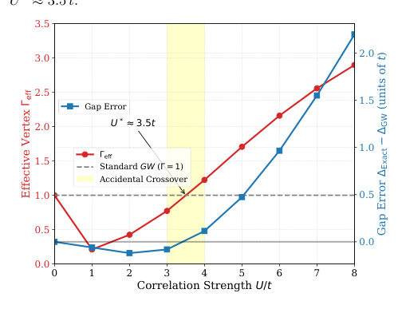
<figcaption class="paper-figure-caption"><b>Fig 3.</b> FIG. 5. Crossover structure for V &gt; 0: gap error versus U/t for V = 0, 0.5, 1.0, showing the splitting of the single zero- crossing into a double-crossover window.</figcaption>
</figure>
</div>

<p><strong>Summary.</strong> This work rigorously benchmarks the GW approximation against exact diagonalization for the extended Hubbard model. It finds that the approximation fails to correctly predict the Mott gap, quantifying the necessary vertex correction ($\Gamma_{	ext{eff}}$) which varies significantly across the phase diagram. The results establish quantitative criteria for assessing the reliability of GW in strongly correlated electronic systems.</p>
<p><strong>Why it may be interesting.</strong> The detailed analysis of correlation effects, gap opening, and the failure of simple approximations like GW provides crucial theoretical diagnostics for understanding strongly correlated quantum materials.</p>
<details>
<summary>Detailed structure</summary>
<p><strong>Main problem.</strong> The paper aims to quantify the reliability and error of the GW approximation for quasiparticle predictions in correlated materials, specifically addressing the role of vertex corrections.</p>
<p><strong>Main result.</strong> The effective vertex correction ($\Gamma_{	ext{eff}}$) changes character across the phase diagram: it is $<1$ in the weak-coupling regime but grows large in the Mott regime, indicating that standard GW fails to capture the full gap opening.</p>
<p><strong>Method.</strong> The authors benchmark GW theory against numerically exact results obtained via exact diagonalization (ED) of the extended Hubbard model on finite rings.</p>
<p><strong>Model / system.</strong> The study uses the half-filled extended Hubbard model, described by a Hamiltonian including on-site ($U$) and nearest-neighbor ($V$) interactions, studied on finite rings.</p>
<p><strong>Key observables.</strong> Effective vertex ($\Gamma_{	ext{eff}}$), quasiparticle gap ($\Delta$), and the comparison between ED and GW calculated gaps.</p>
<p><strong>Important parameters / regimes.</strong> Interaction strengths ($U, V$), finite size ($N=6, 10$), and the crossover point $U^*$.</p>
<p><strong>Assumptions / limitations.</strong> The analysis uses the static limit (COHSEX) for the self-energy and focuses on the spin-integrated density-channel functional.</p>
<p><strong>Figures summary.</strong> Figures compare the exact ED gap versus the GW gap, show the dependence of $\Gamma_{	ext{eff}}$ on $U$, and illustrate how non-local interactions split the accidental crossover point.</p>
<p><strong>Paper structure.</strong> The paper systematically analyzes the failure of GW in different regimes, first establishing the ED benchmark, then diagnosing the failure via $\Gamma_{	ext{eff}}$, and finally showing how non-local interactions complicate the picture.</p>
</details>
<details>
<summary>Abstract</summary>
<p>The $GW$ approximation is the standard tool for quasiparticle predictions in materials, yet its regime of validity in correlated systems remains poorly quantified, because \textit{ab initio} vertex corrections are computationally prohibitive. Using exact diagonalization of the half-filled extended Hubbard model on finite rings as a numerically exact reference, we construct the corresponding model-space $GW$ theory on the identical Hilbert space and quantify its error as a function of local ($U$) and non-local ($V$) interaction strength. We find that the vertex correction changes character across the phase diagram: in the weak-coupling regime the effective vertex $Γ_{\rm eff} < 1$, reflecting the suppression of RPA charge fluctuations by exact short-range correlations, whereas in the Mott regime $Γ_{\rm eff}$ grows monotonically (to $\sim 3$ for $N=6$, reflecting the local vertex required to open the Hubbard gap. Vertex corrections in the electron-hole (polarizability) channel are shown to \emph{worsen} the gap error, indicating that the Mott gap resides in the self-energy channel. For $V=0$, static $COHSEX$ is accidentally exact at a single crossover point $U^* \approx 3.5\,t$; finite $V$, through non-local Fock exchange, splits this point into a double-crossover window that collapses toward weak coupling. These results yield quantitative diagnostics for the reliability of $GW$ in correlated materials.</p>
</details>
<p><sub><a href="#top">↑ back to top</a></sub></p>

<p><a id="paper-2608.23819"></a></p>
<h3 id="circls-compiling-lattice-surgery-to-physical-circuits-with-dynamic-allocation"><a href="http://arxiv.org/abs/2608.23819v1">CircLS: Compiling Lattice Surgery to Physical Circuits with Dynamic Allocation</a></h3>
<p><strong>Authors:</strong> John Yuehan Zhang<br>
<strong>Type:</strong> theory · <strong>Category:</strong> quantum information and computing · <strong>PDF:</strong> <a href="https://arxiv.org/pdf/2608.23819v1">https://arxiv.org/pdf/2608.23819v1</a><br>
<strong>Analysis basis:</strong> full PDF text, analyzed in chunks
<strong>Topic relevance:</strong> <code>quantum measurements</code> <strong>1/5</strong></p>
<div class="figure-strip-hint">↔ Scroll figures horizontally</div>
<div class="paper-figures-scroll">
<figure class="paper-figure-card">
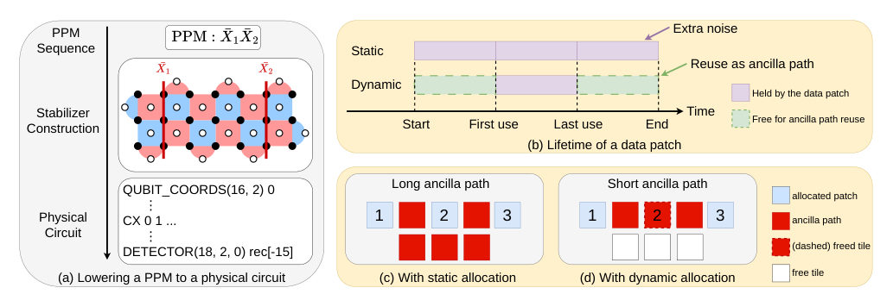
<figcaption class="paper-figure-caption"><b>Fig 1.</b> Figure 1. (a) Lowering the PPM ¯𝑋1 ¯𝑋2: CircLS constructs the stabilizers that measure the product, then emits the physical circuit. (b) Under static allocation a data patch holds its tile from start to end, so it collects extra noise before its first use and after its last use. CircLS allocates the patch at its first use and frees it at its last use, and the freed span is open for ancilla path reuse. (c) and (d) Freeing shortens ancilla paths: patches 1 and 3 are jointly measured. With patch 2 still allocated, the ancilla path detours through five tiles. With patch 2 freed, it runs straight through three tiles.</figcaption>
</figure>
<figure class="paper-figure-card">
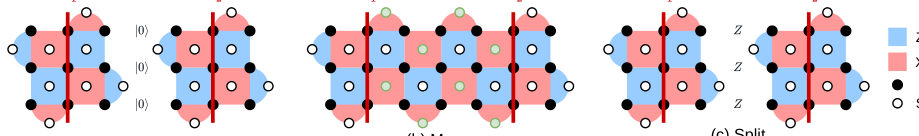
<figcaption class="paper-figure-caption"><b>Fig 2.</b> Figure 2. LS for measuring ¯𝑋1 ¯𝑋2. (a) Initialize the intermediate qubits between two patches. (b) Merge the patches: the product of the green stabilizers equals the outcome of ¯𝑋1 ¯𝑋2. (c) Split the patches by measuring the intermediate qubits in the 𝑍basis.</figcaption>
</figure>
<figure class="paper-figure-card">
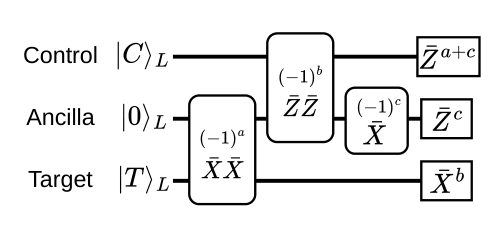
<figcaption class="paper-figure-caption"><b>Fig 3.</b> Figure 3. Logical CNOT by LS: three PPMs with measure- ment results 𝑎, 𝑏, 𝑐, followed by three Pauli corrections.</figcaption>
</figure>
<figure class="paper-figure-card">
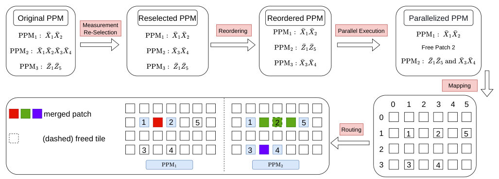
<figcaption class="paper-figure-caption"><b>Fig 4.</b> Figure 4. A PPM sequence through the stages of CircLS. Re-selection replaces ¯𝑋1 ¯𝑋2 ¯𝑋3 ¯𝑋4 with ¯𝑋3 ¯𝑋4, reusing the outcome of ¯𝑋1 ¯𝑋2. Reordering moves ¯𝑍1 ¯𝑍5 forward. Parallel execution runs ¯𝑍1 ¯𝑍5 and ¯𝑋3 ¯𝑋4 together. Mapping places the five patches on the grid, and routing draws every ancilla path: the ancilla path of ¯𝑍1 ¯𝑍5 runs through the tile freed by patch 2.</figcaption>
</figure>
<figure class="paper-figure-card">
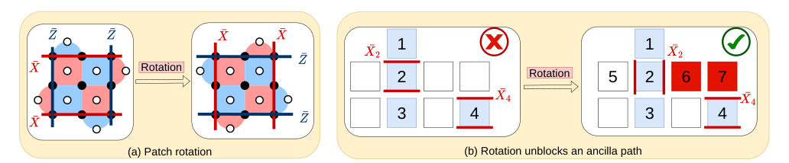
<figcaption class="paper-figure-caption"><b>Fig 5.</b> Figure 6. (a) A patch has two kinds of boundaries: one pair supports the logical ¯𝑋and the other pair the logical ¯𝑍; the rotation protocol [43] turns the left orientation into the right one. (b) The PPM ¯𝑋2 ¯𝑋4 needs an ancilla path between the ¯𝑋boundaries of patches 2 and 4, but both ¯𝑋boundaries of patch 2 touch allocated patches: no ancilla path exists. After rotating patch 2, ¯𝑋2 sits on the left and right boundaries, and the ancilla path connects on the right.</figcaption>
</figure>
</div>

<p><strong>Summary.</strong> This paper introduces CircLS, a compiler designed to translate abstract Lattice Surgery protocols into concrete, fault-tolerant physical quantum circuits. By implementing dynamic resource allocation—reusing physical tiles as they become free—CircLS drastically reduces the required spacetime volume and improves the predicted logical error rate compared to existing methods. This advancement is crucial for scaling quantum computation hardware.</p>
<p><strong>Why it may be interesting.</strong> While focused on quantum computation, the resource optimization techniques (dynamic allocation, scheduling) are highly relevant to any physical implementation of quantum algorithms, including those using AMO platforms where qubit connectivity and coherence time are critical constraints.</p>
<details>
<summary>Detailed structure</summary>
<p><strong>Main problem.</strong> The paper addresses the challenge of compiling Lattice Surgery (LS) protocols, specifically the Pauli Product Measurement (PPM) sequence, from a high-level logical description down to a detailed, fault-tolerant physical quantum circuit.</p>
<p><strong>Main result.</strong> The proposed CircLS compiler successfully completes this pipeline and significantly improves resource efficiency, reducing the allocated spacetime volume by $5.5	imes$ and the Logical Error Rate (LER) by $14	imes$ compared to prior methods.</p>
<p><strong>Method.</strong> It employs a linear-time stabilizer construction rule set to lower the PPM sequence to a Stim circuit, coupled with a novel dynamic data patch allocation scheme that reuses freed physical tiles as ancilla paths.</p>
<p><strong>Model / system.</strong> The work is situated in the context of fault-tolerant quantum computing (FTQC) using Quantum Error Correction (QEC). Logical operations are realized via Lattice Surgery, which relies on sequences of Pauli Product Measurements (PPMs) implemented on physical qubits.</p>
<p><strong>Key observables.</strong> Logical Error Rate (LER), allocated spacetime volume, and qubit-cycles.</p>
<p><strong>Important parameters / regimes.</strong> Code distance ($d$), physical error rate ($p$), and the structure of the quantum program (e.g., CNOT, GHZ states).</p>
<p><strong>Assumptions / limitations.</strong> The primary assumption is that local stabilizer construction rules are sufficient to guarantee global fault tolerance, and that dynamic allocation accurately models resource reuse.</p>
<p><strong>Figures summary.</strong> Figures illustrate the comparison between static and dynamic resource allocation, the three stages of LS for measurement, and the required Pauli corrections for logical gates.</p>
<p><strong>Paper structure.</strong> The paper introduces CircLS to bridge the gap between logical PPM sequences and physical circuits. It details the dynamic allocation technique, shows how this improves resource usage, and validates the compiler's performance by measuring LER and volume reduction against prior toolchains.</p>
</details>
<details>
<summary>Abstract</summary>
<p>In fault-tolerant quantum computing, lattice surgery (LS) is one of the leading ways to realize logical operations, and the Pauli product measurement (PPM) is the basic instruction of LS-based computing. Compilers on the PPM sequence, however, stay at the logical level rather than the physical circuit level. This is because the lowering is complicated: PPMs differ widely from each other, and each must be realized on the physical circuit without breaking fault tolerance. CircLS lowers the PPM sequence to a Stim circuit through linear-time stabilizer construction rules. This completes the pipeline from a quantum program through the PPM sequence to a Stim circuit, on which the compiled program can be verified at the circuit level and its logical error rate (LER) measured. Based on the lowering, we develop a compiler that allocates data patches dynamically: each patch is allocated at its first use and freed at its last use, and the freed tiles are reused as ancilla paths. CircLS reduces the allocated spacetime volume by $5.5\times$ and the LER by $14\times$ against the prior toolchain producing runnable circuits. CircLS is open source at https://github.com/John-YuehanZhang/CircLS.</p>
</details>
<p><sub><a href="#top">↑ back to top</a></sub></p>

<p><a id="paper-2608.24864"></a></p>
<h3 id="dynamical-consequences-of-nontrivial-topology-of-molecular-conical-intersections"><a href="http://arxiv.org/abs/2608.24864v1">Dynamical Consequences of Nontrivial Topology of Molecular Conical Intersections</a></h3>
<p><strong>Authors:</strong> Indranil Ghosh, Kush Banker, Gregory S. Engel<br>
<strong>Type:</strong> theory · <strong>Category:</strong> other · <strong>PDF:</strong> <a href="https://arxiv.org/pdf/2608.24864v1">https://arxiv.org/pdf/2608.24864v1</a><br>
<strong>Analysis basis:</strong> full PDF text, analyzed in chunks
<strong>Topic relevance:</strong> <code>quantum measurements</code> <strong>1/5</strong></p>
<div class="figure-strip-hint">↔ Scroll figures horizontally</div>
<div class="paper-figures-scroll">
<figure class="paper-figure-card">
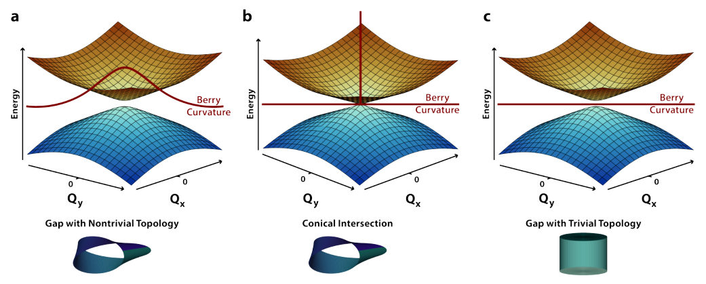
<figcaption class="paper-figure-caption"><b>Fig 1.</b> FIG. 1: The three two-band Jahn–Teller Hamiltonians considered in this chapter, their adiabatic potential energy surfaces, and their Berry phases around the origin. The red line represents the magnitude of Berry Curvature, and is solely for illustrative purposes. (b) the gapless linear Jahn–Teller Hamiltonian HJT of Eq. 1, whose surfaces touch at a CI and which carries a quantized Berry phase γ = π around any loop enclosing the origin. (a) The spin–orbit-coupled (topologically non-trivial) gapped Hamiltonian Htop of Eq. 8, whose surfaces are separated by a gap 2|λ| and which carries a smooth, non-zero Berry curvature Ω−concentrated in a region of radius ∼|λ|/F around the origin (red...</figcaption>
</figure>
<figure class="paper-figure-card">
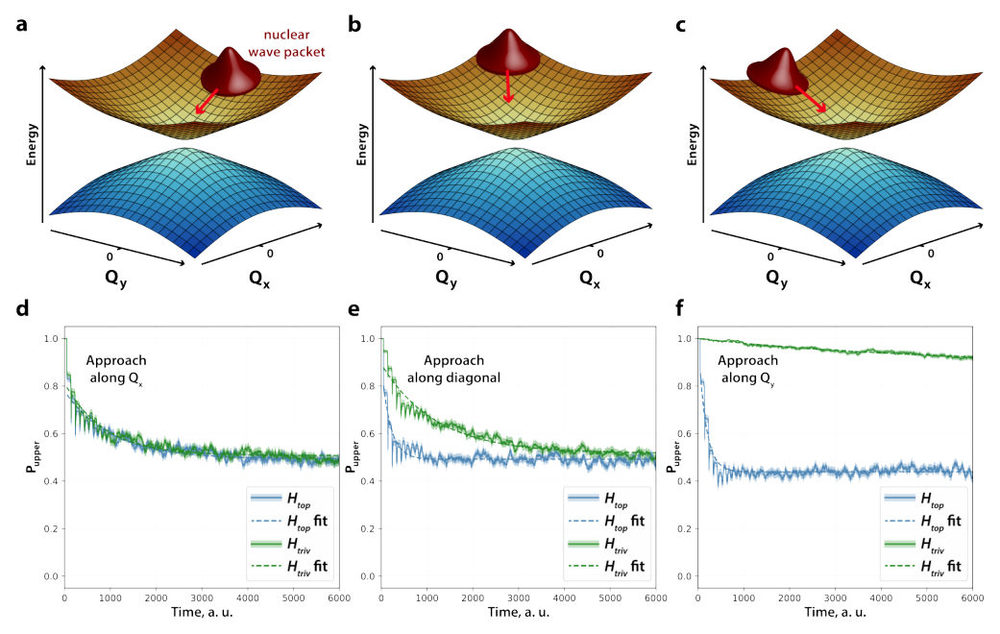
<figcaption class="paper-figure-caption"><b>Fig 2.</b> FIG. 2: a, b and c shows the schematic of the gapped eigensurfaces for both the trivially and topologically gapped Hamiltonians. The initial position of the nuclear wave packet approaching {Qx, Qy} = {0, 0} is schematically shown in a, b and c. The corresponding surface hopping kinetics (depletion of population on the upper eigensurface) for the three approach directions (d: ˆQx; e:  ˆQx + ˆQy  / √</figcaption>
</figure>
</div>

<p><strong>Summary.</strong> This paper explores how the underlying topology of molecular electronic structure, particularly at conical intersections, dictates chemical dynamics. By constructing two Hamiltonians with the same potential energy surfaces but different topological invariants, the authors demonstrate that the topology influences observable nonadiabatic hopping rates via surface hopping simulations. This work establishes topology as a fundamental determinant of molecular excited state relaxation.</p>
<p><strong>Why it may be interesting.</strong> This work directly connects abstract concepts from topological physics (Berry curvature, topological invariants) to concrete, measurable quantities in molecular dynamics (nonadiabatic coupling, reaction rates), providing a powerful diagnostic tool for understanding excited state dynamics.</p>
<details>
<summary>Detailed structure</summary>
<p><strong>Main problem.</strong> The paper investigates how the nontrivial topology of molecular conical intersections (CIs) influences nonadiabatic chemical dynamics, extending beyond the standard Berry phase description.</p>
<p><strong>Main result.</strong> The authors show that a topological invariant, derived from the Berry curvature, can distinguish between two Hamiltonians ($H_{top}$ and $H_{triv}$) that share identical adiabatic potential energy surfaces, and this difference manifests in measurable, direction-dependent surface hopping rates.</p>
<p><strong>Method.</strong> The study employs theoretical derivations using the Jahn-Teller model to calculate topological invariants and utilizes Fewest-Switches Surface Hopping (FSSH) simulations to compute nonadiabatic relaxation rates.</p>
<p><strong>Model / system.</strong> The system is modeled using a two-level Jahn-Teller Hamiltonian, comparing a topologically non-trivial version ($H_{top}$) against a trivially gapped counterpart ($H_{triv}$), both exhibiting a CI.</p>
<p><strong>Key observables.</strong> Relaxation rates ($R$) of population decay on the upper eigensurface, the topological invariant ($C$), and the Non-Adiabatic Coupling (NAC) vector components.</p>
<p><strong>Important parameters / regimes.</strong> The coupling strength parameters ($F, \lambda$) and the approach direction ($\hat{Q}_x, \hat{Q}_y$) are crucial for observing the rate differences.</p>
<p><strong>Assumptions / limitations.</strong> The analysis relies on the adiabatic approximation for the FSSH simulation, and the topological invariant is derived from the Berry curvature integral.</p>
<p><strong>Figures summary.</strong> Figure 1 illustrates the three Hamiltonians (topological, CI, trivial) and their associated geometric structures. Figure 2 shows the surface hopping kinetics (population decay) for different approach directions and Hamiltonians.</p>
<p><strong>Paper structure.</strong> The paper first establishes the theoretical framework by defining the topological invariant using the Berry curvature in the Jahn-Teller model. It then compares the resulting Hamiltonians ($H_{top}$ vs $H_{triv}$) and uses FSSH simulations to demonstrate that the topological difference leads to distinct, measurable nonadiabatic relaxation rates, particularly along certain nuclear coordinates.</p>
</details>
<details>
<summary>Abstract</summary>
<p>The topology of the electronic structure for an avoided crossing and a conical intersection (CI) is different and is characterized by the presence of the geometric phase in the electronic wavefunction in the latter. Using the linear Jahn-Teller model, we show that an avoided crossing can be created from the conical intersection while preserving the nontrivial topology of the latter by adding a Pauli $σ_y$ term to the Hamiltonian. Analogously to solid state systems, we derive a half-integer topological invariant as the integral of the Berry curvature over the CI nuclear branching space. We investigate the influence of electronic topology on chemical dynamics by conducting fewest-switches surface hopping simulations and find distinct hopping rates on identical eigensurfaces but with different topologies. Our work extends the influence of topology on molecular excited state dynamics beyond the Berry phase that can be practically realized through electron-nuclear and spin-orbit coupling.</p>
</details>
<p><sub><a href="#top">↑ back to top</a></sub></p>

<p><a id="paper-2608.23770"></a></p>
<h3 id="general-construction-of-time-dependent-integrable-chiral-field-theories"><a href="http://arxiv.org/abs/2608.23770v1">General Construction of Time-Dependent Integrable Chiral Field Theories</a></h3>
<p><strong>Authors:</strong> Pradip Kattel<br>
<strong>Type:</strong> theory · <strong>Category:</strong> other · <strong>PDF:</strong> <a href="https://arxiv.org/pdf/2608.23770v1">https://arxiv.org/pdf/2608.23770v1</a><br>
<strong>Analysis basis:</strong> full PDF text, analyzed in chunks
<strong>Topic relevance:</strong> <code>Keldysh / 2PI / non-Gaussian methods</code> <strong>1/5</strong></p>
<div class="figure-strip-hint">↔ Scroll figures horizontally</div>
<div class="paper-figures-scroll">
<figure class="paper-figure-card">
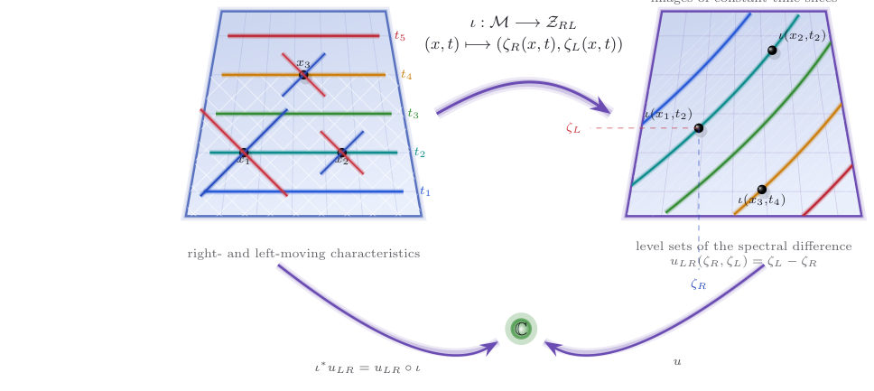
<figcaption class="paper-figure-caption"><b>Fig 1.</b> FIG. 1. Characteristic map from physical spacetime to spectral space. Each spacetime event (x, t) determines the pair of spectral coordinates (ζR, ζL) associated with the right- and left-moving characteristics passing through that event. The colored curves in ZRL are the images of constant-time slices Mti under the characteristic map ι. They are equivalently level sets of the spectral difference uLR(ζR, ζL) = ζL −ζR. The pullback ι∗uLR = uLR ◦ι gives the spectral coordinate sampled by the right-left scattering process.</figcaption>
</figure>
</div>

<p><strong>Summary.</strong> This paper presents a general geometric construction for time-dependent integrable chiral field theories. It shows that the time evolution of the system's interaction is not arbitrary but is rigidly fixed by the initial autonomous scattering data and the constraints of chiral kinematics and spatial homogeneity. This provides a powerful, unified method for generating complex, nonautonomous integrable models.</p>
<p><strong>Why it may be interesting.</strong> The rigorous mathematical framework connecting autonomous scattering data (a common input in integrable models) to time-dependent dynamics is highly relevant for understanding how external time-varying fields or time-dependent couplings affect integrable quantum systems.</p>
<details>
<summary>Detailed structure</summary>
<p><strong>Main problem.</strong> The paper develops a general mathematical procedure to construct time-dependent integrable chiral field theories starting only from autonomous unitary difference-form S-matrices satisfying the Yang-Baxter equation.</p>
<p><strong>Main result.</strong> The nonautonomous dynamics are entirely determined by the initial autonomous scattering data, chiral kinematics, and the constraint of spatial homogeneity, providing a geometric route to time-dependent integrable systems.</p>
<p><strong>Method.</strong> The method involves mapping spectral parameters along free chiral characteristics to define a spectral space, using the inverse Cayley transform to derive the local interaction, and imposing spatial homogeneity to fix the time dependence.</p>
<p><strong>Model / system.</strong> The focus is on chiral field theories with linear dispersion, characterized by a Hamiltonian derived from a local contact interaction $V(u)$. The theory is analyzed using factorized scattering data derived from the S-matrix $S(u)$.</p>
<p><strong>Key observables.</strong> The time-dependent Hamiltonian $H(t)$ and the resulting many-body wavefunctions.</p>
<p><strong>Important parameters / regimes.</strong> The spectral parameter $u$, which evolves affinely in time as $u(t) = 2\kappa t + eta$.</p>
<p><strong>Assumptions / limitations.</strong> The analysis assumes chiral field theories with linear dispersion and requires spatial homogeneity of the right-left scattering forces.</p>
<p><strong>Paper structure.</strong> The paper builds the framework by first establishing the connection between autonomous scattering data and the local interaction via the Cayley transform. It then uses chiral kinematics and spatial homogeneity to determine the time dependence of the interaction, leading to the final construction of the time-dependent Hamiltonian and wavefunctions.</p>
</details>
<details>
<summary>Abstract</summary>
<p>We develop a general procedure for constructing time-dependent integrable chiral field theories from autonomous unitary difference-form $S$-matrices satisfying the Yang-Baxter equation. Spectral parameters are transported along the free right- and left-moving characteristics, defining a map from physical spacetime to spectral space on which the two-body scattering data are evaluated. Requiring spatially homogeneous right-left scattering forces the characteristic map to be affine. The inverse Cayley transform then determines the local contact interaction, while evaluation along the affine spectral trajectory fixes its time dependence. Thus, the nonautonomous interaction is determined by the autonomous scattering data together with chiral kinematics and spatial homogeneity, rather than being introduced independently. The Yang--Baxter equation supplies the factorized many-body transport, and on a spatial circle periodicity leads to quantum Knizhnik--Zamolodchikov (qKZ) equations whose compatibility defines a flat discrete transport in spectral space. Pulling the corresponding spectral-space amplitudes back to physical coordinates gives the time-dependent many-body wavefunctions. Rational $SU(N)$, trigonometric $U_q(\widehat{\mathfrak{sl}}_2)$, and rational $O(N)$ scattering illustrate how the same mechanism generates distinct nonautonomous interactions. The resulting framework gives a geometric route from autonomous factorized scattering data to time-dependent integrable field theories.</p>
</details>
<p><sub><a href="#top">↑ back to top</a></sub></p>

<p><a id="paper-2608.23743"></a></p>
<h3 id="on-split-forms-of-fusion-categories"><a href="http://arxiv.org/abs/2608.23743v1">On Split Forms of Fusion Categories</a></h3>
<p><strong>Authors:</strong> César Galindo<br>
<strong>Type:</strong> theory · <strong>Category:</strong> strongly correlated electrons · <strong>PDF:</strong> <a href="https://arxiv.org/pdf/2608.23743v1">https://arxiv.org/pdf/2608.23743v1</a><br>
<strong>Analysis basis:</strong> full PDF text, analyzed in chunks
<strong>Topic relevance:</strong> <code>analog quantum simulation</code> <strong>1/5</strong></p>
<div class="figure-strip-hint">↔ Scroll figures horizontally</div>
<div class="paper-figures-scroll">
<figure class="paper-figure-card">
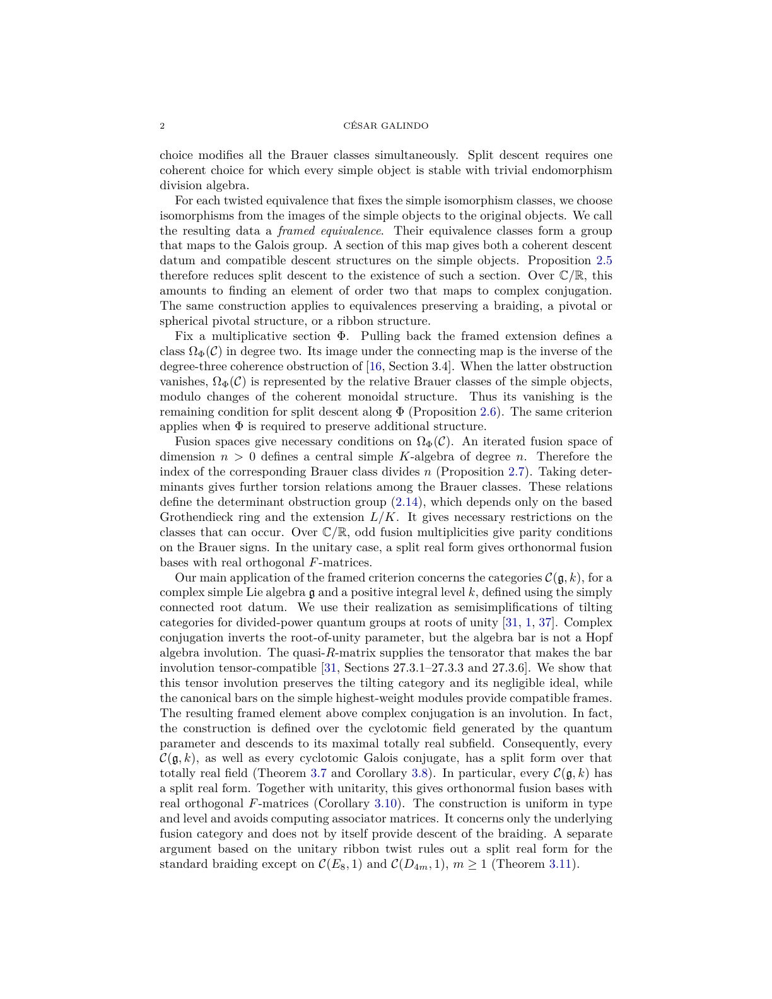
<figcaption class="paper-figure-caption"><b>Fig 1.</b> Low-resolution page preview, page 2</figcaption>
</figure>
<figure class="paper-figure-card">
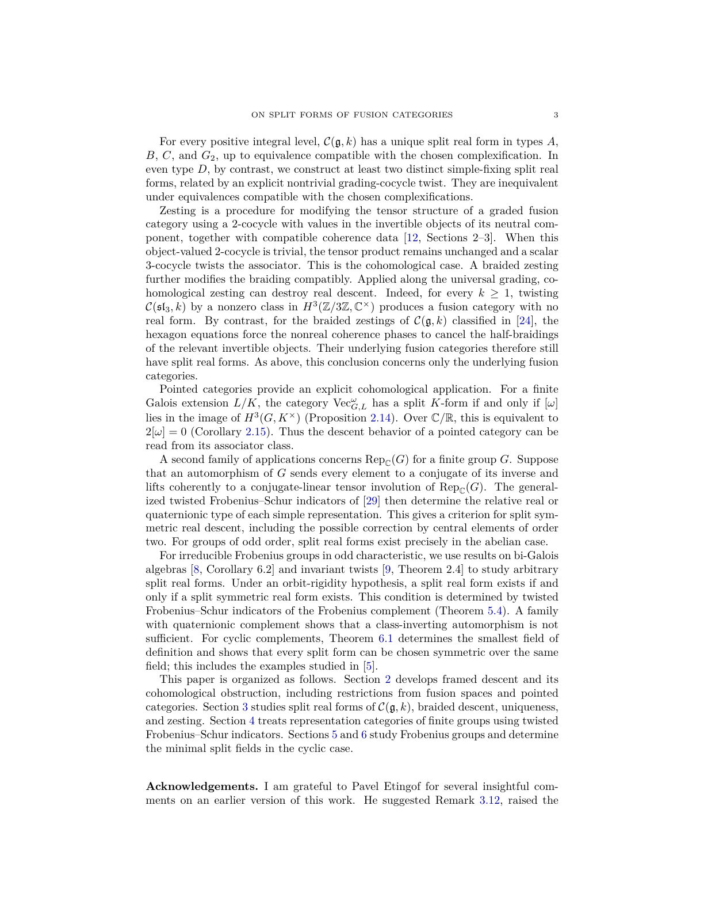
<figcaption class="paper-figure-caption"><b>Fig 2.</b> Low-resolution page preview, page 3</figcaption>
</figure>
<figure class="paper-figure-card">
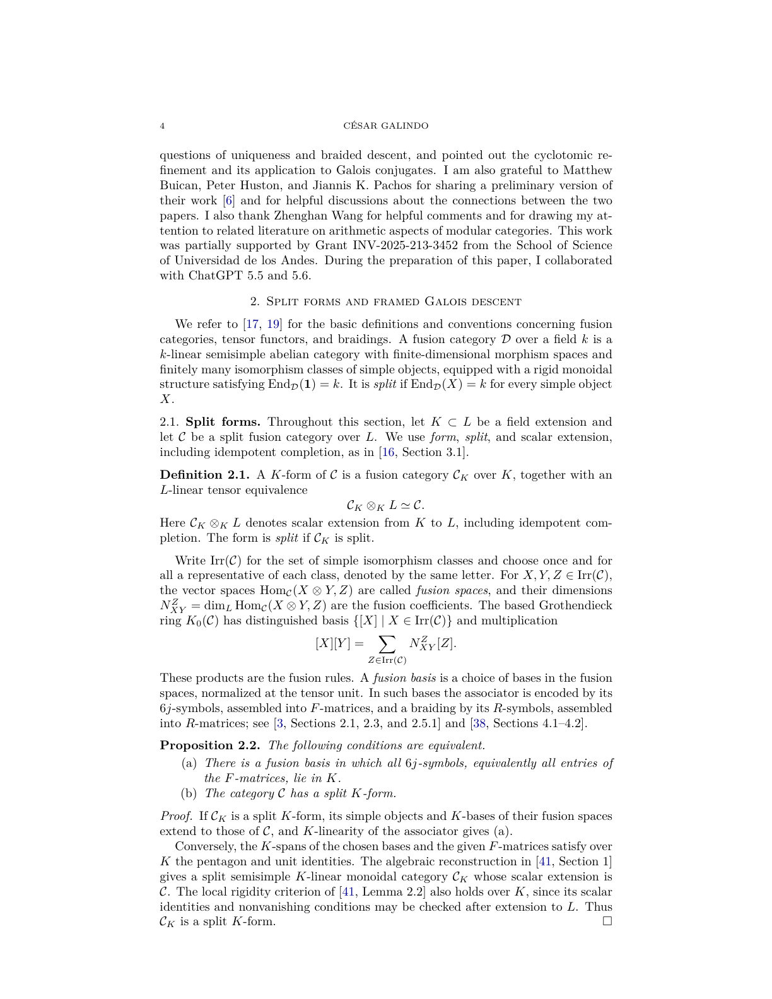
<figcaption class="paper-figure-caption"><b>Fig 3.</b> Low-resolution page preview, page 4</figcaption>
</figure>
<figure class="paper-figure-card">
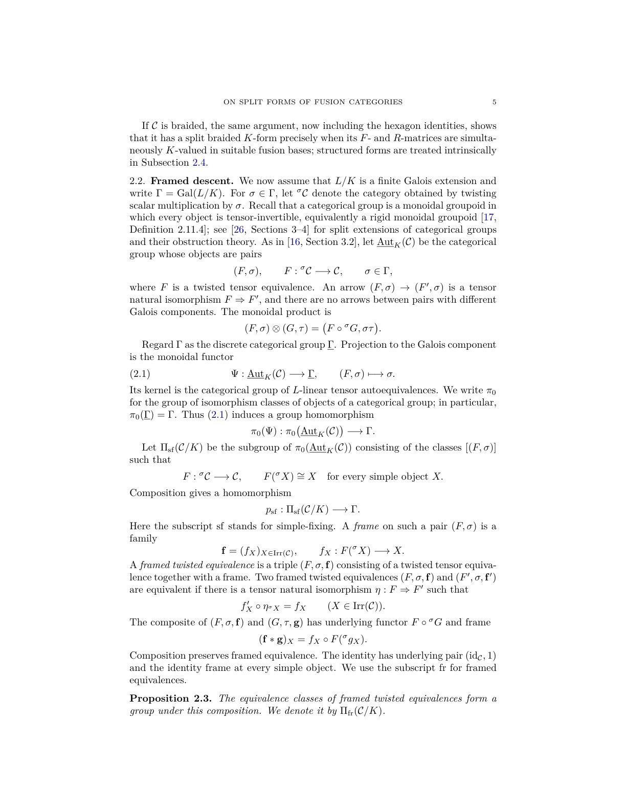
<figcaption class="paper-figure-caption"><b>Fig 4.</b> Low-resolution page preview, page 5</figcaption>
</figure>
<figure class="paper-figure-card">
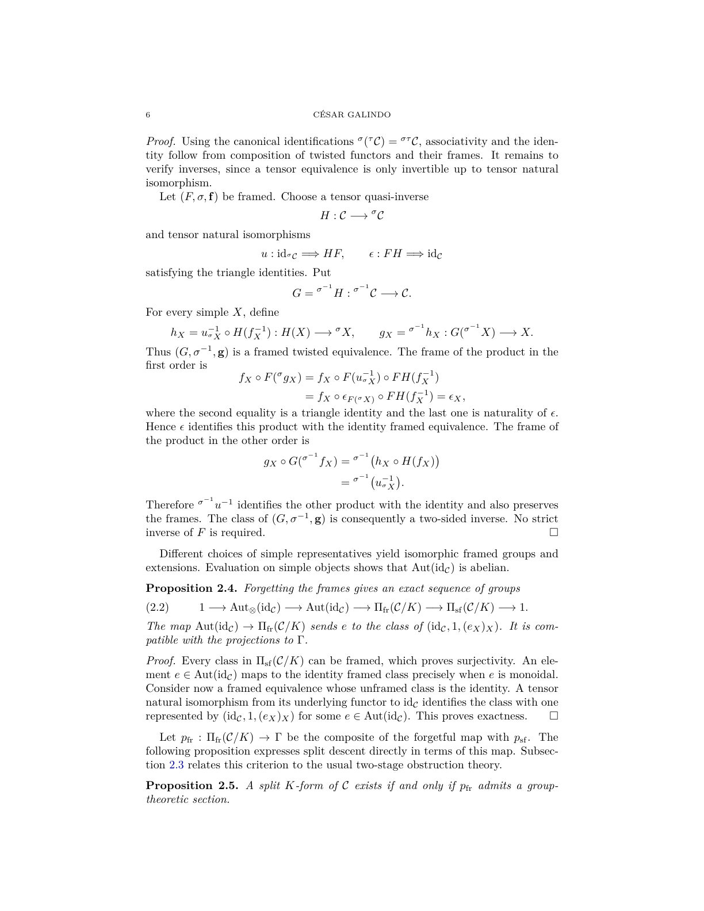
<figcaption class="paper-figure-caption"><b>Fig 5.</b> Low-resolution page preview, page 6</figcaption>
</figure>
</div>

<p><strong>Summary.</strong> This theoretical paper develops a framework to determine when a fusion category, particularly those arising from quantum groups, admits a 'split real form.' By translating the problem into group-theoretic splitting conditions and analyzing cohomology obstructions, the authors establish powerful criteria for the existence of such real structures, which has implications for classifying physical symmetries in condensed matter systems.</p>
<p><strong>Why it may be interesting.</strong> The deep connection between abstract algebraic structures (fusion categories, Galois theory) and physical symmetries (like those governing quantum groups) provides powerful mathematical tools applicable to classifying phases of matter or topological orders.</p>
<details>
<summary>Detailed structure</summary>
<p><strong>Main problem.</strong> The paper investigates the mathematical conditions for a fusion category, particularly those arising from quantum groups, to possess a 'split real form' over a specified field extension.</p>
<p><strong>Main result.</strong> It proves that every fusion category $\mathcal{C}(\mathfrak{g}, k)$ associated with a quantum group has a split real form, although the standard braiding structure itself often does not.</p>
<p><strong>Method.</strong> The analysis employs advanced techniques from Galois descent theory, group cohomology ($H^2, H^3$), and the study of algebraic obstructions derived from fusion coefficients and R-matrices.</p>
<p><strong>Model / system.</strong> The primary mathematical objects are fusion categories, specifically $\mathcal{C}(\mathfrak{g}, k)$ derived from quantum groups at roots of unity, and representation categories $ ext{Rep}_{\mathbb{C}}(G)$ of certain finite groups $G$.</p>
<p><strong>Key observables.</strong> The existence of a split form, the degree-two obstruction $\Omega_{\Phi}(C)$, and the vanishing of cohomology classes are key diagnostics.</p>
<p><strong>Important parameters / regimes.</strong> The quantum parameter $k$, the root datum $(\mathfrak{g}, k)$, and the structure of the Galois group $  ext{Gal}(L/K)$ are crucial parameters.</p>
<p><strong>Assumptions / limitations.</strong> The analysis assumes the existence of a finite Galois extension $L/K$ and relies on specific constructions involving the quasi-R-matrix for quantum groups.</p>
<p><strong>Paper structure.</strong> The paper builds from general descent theory for fusion categories (Chunk 2) to specific applications to quantum groups (Chunk 1), and further analyzes the concrete case of representation categories of Frobenius groups (Chunks 3 &amp; 4).</p>
</details>
<details>
<summary>Abstract</summary>
<p>We formulate split Galois descent for fusion categories through framed equivalences, reducing the existence of a split form to a group-theoretic splitting problem. The associated degree-two obstruction combines categorical coherence with stable descent of the simple objects, while fusion spaces impose index and parity restrictions. For quantum groups at roots of unity, we use the quasi-$R$-matrix to make the bar involution tensor-compatible and prove that the underlying fusion category $\mathcal C(\mathfrak g,k)$, associated with the simply connected root datum, has a split form over the maximal totally real subfield of the cyclotomic field generated by the quantum parameter. The same holds for all its cyclotomic Galois conjugates; in particular, every $\mathcal C(\mathfrak g,k)$ has a split real form. By contrast, no split real form exists for the standard braiding except on $\mathcal C(E_8,1)$ and $\mathcal C(D_{4m},1)$, $m \geq 1$. We further show that associative zesting can destroy real descent of $\mathcal C(\mathfrak g,k)$, while every braided zesting of $\mathcal C(\mathfrak g,k)$ still admits a split real form as an underlying fusion category. Applications to pointed and finite-group representation categories give criteria for real descent in terms of cohomology and Frobenius--Schur indicators.</p>
</details>
<p><sub><a href="#top">↑ back to top</a></sub></p>

<p><a id="paper-2608.24527"></a></p>
<h3 id="provable-quantum-classical-separation-for-continuous-gibbs-sampling"><a href="http://arxiv.org/abs/2608.24527v1">Provable Quantum--Classical Separation for Continuous Gibbs Sampling</a></h3>
<p><strong>Authors:</strong> Enrico Olivucci, Mariia Sobchuk, Sehmimul Hoque, Jeffrey Hnybida, Kyungho W. Kim, Ala Shayeghi, Pooya Ronagh<br>
<strong>Type:</strong> theory · <strong>Category:</strong> statistical mechanics · <strong>PDF:</strong> <a href="https://arxiv.org/pdf/2608.24527v1">https://arxiv.org/pdf/2608.24527v1</a><br>
<strong>Analysis basis:</strong> full PDF text, analyzed in chunks
<strong>Topic relevance:</strong> <code>analog quantum simulation</code> <strong>1/5</strong></p>
<div class="figure-strip-hint">↔ Scroll figures horizontally</div>
<div class="paper-figures-scroll">
<figure class="paper-figure-card">

<figcaption class="paper-figure-caption"><b>Fig 1.</b> FIG. 1. The role of Gevrey smoothness in our separation result. (a) The schematic of the decay of the Fourier modes of a periodic smooth function. The QSVT-based quantum algorithm requires truncating the Fourier transform of the Gibbs density to a threshold N. Mere smoothness (i.e., the (s = ∞)-Gevrey class) is too weak to guarantee N = polylog(1/ε), required for our quantum upper bound result. (b) The schematic of a bump function defined on a torus. Such functions hide their center of mass in a small area (patch) on the torus, and queries of any order to points outside the patch provide no information to help the search for the patch. These functions are not analytic (because any analytic...</figcaption>
</figure>
<figure class="paper-figure-card">

<figcaption class="paper-figure-caption"><b>Fig 2.</b> FIG. 2. The bump density ¯pν,ℓ,α (21). Left: the two-dimensional case (d = 2), a mesa of height α/Zν,ℓ,α over the inner plateau [2ν, ℓ−2ν]2, falling to the flat background across ramps of width 2ν. Right: one-dimensional section. The barrier amplitude α is the plateau-to-background ratio, and the patch carries probability mass δ(ν, ℓ, α) (23).</figcaption>
</figure>
<figure class="paper-figure-card">

<figcaption class="paper-figure-caption"><b>Fig 3.</b> FIG. 3. Annealing schedule consisting of repeated applications of the QSVTh protocol [LDCL26] with the decreasing target inverse temperatures. Each block F(β) represents application of the algorithm in Algorithm 1 with target temperature β and βf represents the target inverse temperature.</figcaption>
</figure>
</div>

<p><strong>Summary.</strong> This paper establishes a provable quantum-classical separation for sampling from continuous Gibbs distributions on a torus. It shows that quantum algorithms can achieve a quadratic speedup in the barrier amplitude compared to the best classical algorithms. The separation relies on the specific smoothness properties (s-Gevrey class) of the underlying energy potential.</p>
<p><strong>Why it may be interesting.</strong> This work provides a concrete, quantitative quantum advantage for sampling complex, high-dimensional probability distributions arising in statistical mechanics, which is highly relevant for simulating physical systems.</p>
<details>
<summary>Detailed structure</summary>
<p><strong>Main problem.</strong> The paper proves the first quantum-classical separation for sampling from a Gibbs distribution over a continuous domain.</p>
<p><strong>Main result.</strong> It shows that quantum algorithms can sample the state quadratically faster in the barrier amplitude ($\alpha$) compared to the best classical algorithms, achieving a separation ratio of $\Omega(\alpha^{c})$.</p>
<p><strong>Method.</strong> The separation is established by deriving an information-theoretic lower bound for classical query complexity using an adversarial 'hide-and-seek' argument, and an upper bound using a quantum algorithm based on temperature annealing and quantum singular value thresholding.</p>
<p><strong>Model / system.</strong> The system is sampling from a Gibbs state $p \propto e^{-eta E}$ defined on the $d$-dimensional torus $\mathbb{T}^d$, where $E$ is a smooth ($s$-Gevrey) potential. The difficulty is controlled by the barrier amplitude $\alpha = e^{eta\Delta}$.</p>
<p><strong>Key observables.</strong> Total variation distance ($    ext{TV}$), query complexity ($N_{   ext{cl}}$ vs $N_q$), and the barrier amplitude $\alpha$.</p>
<p><strong>Important parameters / regimes.</strong> Barrier amplitude $\alpha$, inverse temperature $eta$, Gevrey smoothness exponent $s$ ($s>1$ required for separation), and dimension $d$.</p>
<p><strong>Assumptions / limitations.</strong> The separation holds for $s$-Gevrey functions where $s>1$ and $s 
eq \infty$. The quantum bound relies on the structure of the annealing schedule and the coherent gradient oracle.</p>
<p><strong>Figures summary.</strong> Figure 1 illustrates the role of Gevrey smoothness by showing the decay of Fourier modes (requiring $s>1$) and demonstrating that mere smoothness ($s=\infty$) or analyticity ($s=1$) is insufficient for the separation.</p>
<p><strong>Paper structure.</strong> The paper establishes the main theorem, proves the classical lower bound using an adversarial argument, presents the quantum algorithm using temperature annealing, and finally proves the separation ratio.</p>
</details>
<details>
<summary>Abstract</summary>
<p>We prove the first quantum--classical separation for a sampling problem over a continuous domain. For a class of Gibbs states $p\propto e^{-βE}$ on the torus $\mathbb{T}^d$ with smooth ($s$-Gevrey) potential and barrier amplitude $α=e^{βΔ}$, where $Δ= \max E-\min E$, every classical algorithm---querying the value, gradient, or any higher-order derivatives of the log-density---requires $Ω(α)$ queries to sample at constant accuracy in total variation distance, while a quantum algorithm based on quantum singular value thresholding and temperature annealing samples with $\tilde{O}\left(\sqrtα\right)$ queries to an oracle for the gradient. The advantage is quadratic in the barrier amplitude, which becomes exponential in the dimension, $e^{Ω(d)}$, at low temperature. The classical bound is information-theoretic, holding for every classical algorithm with query access to the Gibbs potential and its derivatives at any order.</p>
</details>
<p><sub><a href="#top">↑ back to top</a></sub></p>

<p><a id="paper-2608.23683"></a></p>
<h3 id="raman-circular-dichroism-reveals-higher-order-quantum-geometry-of-magnons"><a href="http://arxiv.org/abs/2608.23683v1">Raman Circular Dichroism Reveals Higher-Order Quantum Geometry of Magnons</a></h3>
<p><strong>Authors:</strong> Yong Chan Kim, Youngsu Choi, Kwang-Yong Choi, Kyusung Hwang<br>
<strong>Type:</strong> theory · <strong>Category:</strong> strongly correlated electrons · <strong>PDF:</strong> <a href="https://arxiv.org/pdf/2608.23683v1">https://arxiv.org/pdf/2608.23683v1</a><br>
<strong>Analysis basis:</strong> full PDF text, analyzed in chunks
<strong>Topic relevance:</strong> <code>analog quantum simulation</code> <strong>1/5</strong></p>
<div class="figure-strip-hint">↔ Scroll figures horizontally</div>
<div class="paper-figures-scroll">
<figure class="paper-figure-card">

<figcaption class="paper-figure-caption"><b>Fig 1.</b> FIG. 1. Raman circular dichroism of the field-polarized Kitaev system. (a) Schematic of Raman scattering. The magnetic field h(θ) is rotated within the honeycomb plane of the Kitaev system. The yellow and blue surfaces depict the magnon energy bands over the first Brillouin zone. (b) Two-magnon RCD intensity I2M RCD as a function of Raman energy shift ω obtained for the spin model HKJΓ Γ ′h [Eq. (25)] with the field aligned at θ = 0◦(red) and θ = 30◦(black). (c) Field-angle dependence of I2M RCD(ω). The RCD intensity changes sign as the field direction crosses a bond direction (θ = 30◦, 90◦, 150◦, 210◦, 270◦, 330◦) and vanishes when the field is aligned with a bond.</figcaption>
</figure>
<figure class="paper-figure-card">

<figcaption class="paper-figure-caption"><b>Fig 2.</b> FIG. 2. RCD intensity I2M RCD(ω, θ = 0◦) resolved into three two-magnon sectors. Top row: (m = 2, n = 4). (a) Sector- resolved RCD intensity. (b)–(d) Momentum-space maps of M24(k; 7meV &lt; ω &lt; 16meV), M24(k; 16meV &lt; ω &lt; 23meV), and ω2k + ω2,−k, respectively. Middle row: (m = 2, n = 3). (e) Sector-resolved RCD intensity. (f)–(h) Momentum-space maps of M23(k; 21meV &lt; ω &lt; 25meV), M23(k; 25meV &lt; ω &lt; 28meV), and ω2k + ω1,−k, respectively. Bottom row: (m = 1, n = 3). (i) Sector-resolved RCD intensity. (j)–(l) Momentum-space maps of M13(k; 23meV &lt; ω &lt; 33meV), M13(k; 33meV &lt; ω &lt; 45meV), and ω1k + ω1,−k, respectively. The hexagon denotes the first Brillouin zone. The brown lines indicate the magnon...</figcaption>
</figure>
<figure class="paper-figure-card">

<figcaption class="paper-figure-caption"><b>Fig 3.</b> Figure 1(b) shows the calculated RCD intensity I2M RCD(ω), which exhibits a broad continuum and sev- eral peaks at θ = 0◦whereas it vanishes across all fre- quencies at θ = 30◦. Figure 1(c) shows a color plot of the field-angle dependence of the RCD signals, revealing a distinguished sixfold rotational periodicity. To iden- tify their origins, we classify the two-magnon excitations ωmk + ωn−N,−k into three sectors.</figcaption>
</figure>
<figure class="paper-figure-card">

<figcaption class="paper-figure-caption"><b>Fig 4.</b> FIG. 3. The L-matrix element Im h (Lxx nm −Lyy nm)Lxy mn i for m = 2 and n = 4, decomposed into six geometric components. Top:</figcaption>
</figure>
<figure class="paper-figure-card">

<figcaption class="paper-figure-caption"><b>Fig 5.</b> FIG. 4. The L-matrix element Im h (Lxx nm −Lyy nm)Lxy mn i for m = 2 and n = 3, decomposed into six geometric components. Top:</figcaption>
</figure>
</div>

<p><strong>Summary.</strong> This paper develops a theoretical framework to characterize the higher-order quantum geometry of magnons in magnetic materials using two-magnon Raman Circular Dichroism (RCD). By decomposing the RCD signal into six distinct geometric tensor contributions, the authors establish RCD as a powerful, non-trivial spectroscopic tool for probing generalized quantum geometry beyond standard metrics.</p>
<p><strong>Why it may be interesting.</strong> The work provides a rigorous theoretical framework connecting measurable spectroscopic signals (RCD) directly to abstract, higher-order geometric properties of the underlying quantum excitations (magnons).</p>
<details>
<summary>Detailed structure</summary>
<p><strong>Main problem.</strong> Developing a gauge-invariant theory to probe the higher-order quantum geometry of magnons using two-magnon Raman Circular Dichroism (RCD).</p>
<p><strong>Main result.</strong> RCD is established as a spectroscopic probe for generalized magnon quantum geometry, with the spectrum being governed by higher-order geometric tensors.</p>
<p><strong>Method.</strong> The theory decomposes the Raman operator into Berry connections and covariant derivatives, leading to the identification of six distinct higher-order quantum-geometric tensors that contribute to the two-magnon RCD intensity.</p>
<p><strong>Model / system.</strong> The study applies the theory to a field-polarized Kitaev magnet, modeled by a spin Hamiltonian, and analyzes magnon excitations using Linear Spin-Wave Theory (LSWT).</p>
<p><strong>Key observables.</strong> Two-magnon RCD intensity, $I_{2M}^{RCD}(\omega)$, and six higher-order quantum-geometric tensors (QGTs).</p>
<p><strong>Important parameters / regimes.</strong> Kitaev coupling constant ($K$), exchange coupling ($J$), applied magnetic field ($h$), and field angle ($   heta$).</p>
<p><strong>Assumptions / limitations.</strong> The analysis relies on LSWT and the successful decomposition of the Raman operator into specific geometric terms using projector representations.</p>
<p><strong>Figures summary.</strong> Figures show the RCD intensity dependence on the magnetic field angle, resolved into three two-magnon sectors, and decomposed into six distinct geometric components.</p>
<p><strong>Paper structure.</strong> The paper systematically builds the theory by defining single-state quantum geometric tensors, deriving their projector representations for second-order terms, and finally applying this framework to calculate the two-magnon RCD intensity as a sum of six geometric contributions.</p>
</details>
<details>
<summary>Abstract</summary>
<p>We develop a gauge-invariant theory of higher-order magnon quantum geometry probed by two-magnon Raman circular dichroism (RCD). The Raman operator decomposes into Berry connections, covariant derivatives, and products of Berry connections, giving rise to quantum geometric tensors beyond the quantum metric and Berry curvature. Applying this theory to a field-polarized Kitaev magnet, we show that higher-order geometric tensors govern the dichroic response. Our results establish RCD as a spectroscopic probe of generalized magnon quantum geometry.</p>
</details>
<p><sub><a href="#top">↑ back to top</a></sub></p>

<p><a id="paper-2608.23693"></a></p>
<h3 id="reality-and-complexity-of-math764math-symbols-in-math765mathd-topological-phases"><a href="http://arxiv.org/abs/2608.23693v1">Reality and Complexity of $F$-symbols in $2+1$d Topological Phases</a></h3>
<p><strong>Authors:</strong> Matthew Buican, Peter Huston, Jiannis K. Pachos<br>
<strong>Type:</strong> theory · <strong>Category:</strong> strongly correlated electrons · <strong>PDF:</strong> <a href="https://arxiv.org/pdf/2608.23693v1">https://arxiv.org/pdf/2608.23693v1</a><br>
<strong>Analysis basis:</strong> full PDF text, analyzed in chunks
<strong>Topic relevance:</strong> <code>analog quantum simulation</code> <strong>1/5</strong></p>
<div class="figure-strip-hint">↔ Scroll figures horizontally</div>
<div class="paper-figures-scroll">
<figure class="paper-figure-card">

<figcaption class="paper-figure-caption"><b>Fig 1.</b> Fig.1: A schematic picture of flatness in terms of the σa phases that describe the interaction between charge conjugation and pivotal data. Left: an allowed fusion vertex (a; b, c), i.e.</figcaption>
</figure>
<figure class="paper-figure-card">

<figcaption class="paper-figure-caption"><b>Fig 2.</b> Fig. 2: The F- and R-symbols of a braided fusion category. The F-symbols govern fusion</figcaption>
</figure>
<figure class="paper-figure-card">

<figcaption class="paper-figure-caption"><b>Fig 3.</b> Fig. 3: On the left, we have the 3-manifold, M ∼= Σ × I. The surface at y = 0 acts on the</figcaption>
</figure>
</div>

<p><strong>Summary.</strong> This work establishes a deep physical principle governing when the fundamental F-symbols of anyon theories can be made real in a gauge. By linking this reality condition to the flatness of the charge-conjugation symmetry, the authors provide a unifying framework for understanding topological phases. This is significant because it offers a concrete, symmetry-based criterion for classifying quantum materials exhibiting topological order.</p>
<p><strong>Why it may be interesting.</strong> The connection between topological invariants (F-symbols) and symmetry constraints (charge-conjugation flatness) provides a powerful, general principle for classifying realizable quantum phases, which is relevant for understanding emergent symmetries in strongly correlated electron systems.</p>
<details>
<summary>Detailed structure</summary>
<p><strong>Main problem.</strong> The central problem is determining the physical conditions under which the F-symbols, which encode the associativity of fusion in anyon theories, can be made real via a suitable gauge transformation.</p>
<p><strong>Main result.</strong> The reality of the F-symbols is shown to be governed by a physical mechanism related to the flatness of the braided charge-conjugation symmetry within the associated unitary ribbon category.</p>
<p><strong>Method.</strong> The authors analyze the relationship between the F-symbols and their complex conjugates using gauge transformations, reducing the problem to a condition on the symmetry structure of the category.</p>
<p><strong>Model / system.</strong> The theory is formulated using Unitary Modular Tensor Categories (UMTCs) that model $2+1$ dimensional Topological Quantum Field Theories (TQFTs) and anyon models, including families of Chern-Simons theories.</p>
<p><strong>Key observables.</strong> The F-symbols, which quantify the associativity of fusion, and the associated R-matrices.</p>
<p><strong>Important parameters / regimes.</strong> The structure of the charge-conjugation symmetry, specifically its 'flatness' or the grading property of the associated Frobenius-Schur data.</p>
<p><strong>Assumptions / limitations.</strong> The analysis assumes the existence of a unitary ribbon category and relies on relating the reality condition to the trivialization of local gauge transformations.</p>
<p><strong>Figures summary.</strong> Figure 1 schematically illustrates the concept of 'flatness' in the context of the charge-conjugation symmetry, showing the required triviality of the holonomy at fusion vertices.</p>
<p><strong>Paper structure.</strong> The paper develops the argument by first establishing the gauge equivalence between F-symbols and their conjugates, then linking this equivalence to the physical condition of charge-conjugation symmetry, and finally showing that 'flatness' of this symmetry guarantees the existence of a real gauge.</p>
</details>
<details>
<summary>Abstract</summary>
<p>The $F$-symbols of an anyon theory encode the associativity of fusion and constitute some of the theory's most fundamental and, simultaneously, subtle data. Much of the subtlety lies in the gauge-dependence of the $F$-symbols. Despite their generic complexity, many braided anyon theories admit gauges in which all $F$-symbols are real, a phenomenon for which no general organising principle has been known. We identify a physical mechanism underlying this reality. For a unitary ribbon fusion category admitting an appropriate braided charge-conjugation symmetry, we show that the complex-conjugated $F$-symbols are related to the original ones by a gauge transformation. Finding a real gauge is thereby reduced to a condition on these transformations. When the charge-conjugation symmetry is suitably "flat,'' or equivalently when the associated "twisted'' Frobenius-Schur (or "generalized'' Kawanaka-Matsuyama) data respects a grading, these local transformations can be trivialised and a real gauge exists. This framework unifies a broad range of previously disparate examples, including families of Chern-Simons theories whose $F$-symbols are difficult to directly compute. Finally, we exhibit a unitary ribbon category that realizes a novel obstruction to the existence of a real gauge and therefore has inherently complex $F$-symbols.</p>
</details>
<p><sub><a href="#top">↑ back to top</a></sub></p>

<p><a id="paper-2608.24608"></a></p>
<h3 id="thermal-dmrg-for-quasi-one-dimensional-magnetic-molecules-and-chains"><a href="http://arxiv.org/abs/2608.24608v1">Thermal DMRG for quasi one-dimensional magnetic molecules and chains</a></h3>
<p><strong>Authors:</strong> L. Horstmann, J. Schnack<br>
<strong>Type:</strong> theory · <strong>Category:</strong> numerical methods · <strong>PDF:</strong> <a href="https://arxiv.org/pdf/2608.24608v1">https://arxiv.org/pdf/2608.24608v1</a><br>
<strong>Analysis basis:</strong> full PDF text, analyzed in chunks
<strong>Topic relevance:</strong> <code>methods for driven-dissipative</code> <strong>1/5</strong></p>
<div class="figure-strip-hint">↔ Scroll figures horizontally</div>
<div class="paper-figures-scroll">
<figure class="paper-figure-card">

<figcaption class="paper-figure-caption"><b>Fig 1.</b> Figure 1. Schematic view on how to improve periodic bound- ary condition: (a) MPS chain with one long interaction (b) reordering of the sites to only next-nearest interaction without changing physics (c) grouping two neighbouring sites together so the interaction is only nearest neighbour</figcaption>
</figure>
<figure class="paper-figure-card">

<figcaption class="paper-figure-caption"><b>Fig 2.</b> Figure 2. Structure of the investigated delta chain with fer- romagnetic nearest neighbor exchange J1 and antiferromag- netic next-nearest neighbor exchange J2 between adjacent odd sites.</figcaption>
</figure>
<figure class="paper-figure-card">

<figcaption class="paper-figure-caption"><b>Fig 3.</b> Figure 3. Heat capacity for a delta chain: N = 32, α = 0.55, open boundary condition. Both methods, thDMRG-TEBD and thDMRG-VarMPO are used and compared to FTLM. VarMPO took 4 weeks compared to 2 days for TEBD on the same hardware with the same number of cores.</figcaption>
</figure>
<figure class="paper-figure-card">

<figcaption class="paper-figure-caption"><b>Fig 4.</b> Figure 3 shows the specific heat for N = 32 spins si = 1/2 at α = 0.55 calculated in four different ways. The FTLM result (thin red curve) is considered quasi- exact and serves as a benchmark. Our earlier investiga- tion [25] could not reproduce the double-peak structure, it was accurate only down to temperatures T/|J1| ∼0.1. The investigated new methods thDMRGt-TEBD and thDMRG-VarMPO are both able to follow the FTLM re- sult down to the low-temperature maximum at T/|J1| ∼ 0.01 and even beyond with reasonable choices of bond dimension m and imaginary-time step dβ. Computing times are both not short, but very different. VarMPO took 4 weeks compared to 2 days for TEBD on the same hardware...</figcaption>
</figure>
<figure class="paper-figure-card">

<figcaption class="paper-figure-caption"><b>Fig 5.</b> Figure 5. Magnetic susceptibility χ = M/B at B = 0.1 T for open chains. Experimental results (symbols) and the an- tiferromagnetic exchange interaction are taken from Ref. [37]. thDMRG-TEBD calculations are given by dashed curves. For the N = 12 chain we did a calculation with bond dimension m = 200 and cooling steps dβ = 0.01 up to βmax = 2. For the other chains calculation were done with dβ = 0.001 up to βmax = 0.2 and m = {200; 250; 350} for N = {48; 120; 240}, respectively.</figcaption>
</figure>
</div>

<p><strong>Summary.</strong> This paper investigates the feasibility of using advanced tensor network methods, particularly Thermal DMRG, to calculate thermal properties of large, complex quantum magnetic molecules and chains. By comparing results against exact diagonalization and FTLM, the authors map out the computational limits imposed by system geometry and interaction complexity. It provides a crucial resource for theoretical physicists working on strongly correlated magnetic materials.</p>
<p><strong>Why it may be interesting.</strong> This work is highly relevant as it pushes the boundaries of applying tensor network methods to finite-temperature, interacting quantum spin systems, providing benchmarks for simulating complex magnetic materials.</p>
<details>
<summary>Detailed structure</summary>
<p><strong>Main problem.</strong> The primary goal is to accurately evaluate thermal equilibrium properties of large, quasi one-dimensional magnetic molecules and chains that are too complex or large for exact diagonalization.</p>
<p><strong>Main result.</strong> The study demonstrates that advanced tensor network methods can achieve accurate results for many realistic magnetic systems, although convergence is limited by geometry (Area Law) and specific boundary conditions.</p>
<p><strong>Method.</strong> The authors employ advanced tensor network techniques, including Thermal DMRG (thDMRG) using both the Variational MPO approach and TEBD, alongside comparison with FTLM.</p>
<p><strong>Model / system.</strong> The focus is on quantum spin systems, including quasi one-dimensional chains (e.g., delta chains, Fe chains) and molecular rings, described by Heisenberg-like Hamiltonians potentially including single-ion anisotropy.</p>
<p><strong>Key observables.</strong> Magnetic susceptibility ($\chi$), specific heat ($C$), and entanglement entropy ($S_A$).</p>
<p><strong>Important parameters / regimes.</strong> Bond dimension ($m$), temperature ($T$), and the nature of boundary conditions (open vs. periodic).</p>
<p><strong>Assumptions / limitations.</strong> The methods are inherently limited by the geometry of the system (Area Law for MPS) and the complexity of interactions (e.g., TEBD is limited to nearest-neighbor interactions).</p>
<p><strong>Figures summary.</strong> Figures compare magnetic susceptibility and entanglement entropy across different methods (ED, FTLM, thDMRG) for spin rings and chains, highlighting convergence behavior.</p>
<p><strong>Paper structure.</strong> The paper systematically compares the performance of various numerical techniques (DMRG, TEBD, FTLM) across different physical models (open chains, rings, anisotropic systems) to determine the limits of current computational approaches for thermal quantum magnetism.</p>
</details>
<details>
<summary>Abstract</summary>
<p>Density matrix renormalization group methods or tensor network methods in general can not only be used to determine ground states but also to evaluate thermal equilibrium properties. Although convergence is superior for one-dimensional quantum spin systems with nearest neighbor exchange and open boundary conditions, the hope is that these methods can as well be employed to approximate magnetic observables of magnetic molecules with more complex interaction patterns. Here, we study the accuracy that can realistically be achieved for several archetypical quasi one-dimensional structures using the TenPy suite. In our study, we aim at systems that are too large for exact diagonalization or Krylov space methods.</p>
</details>
<p><sub><a href="#top">↑ back to top</a></sub></p>
<h2 id="other-papers-19">Other papers (19)</h2>
<p><em>Papers from primary archives without highlighted authors or any topic match. Click to expand.</em></p>
<details>
<summary>Show other papers</summary>

<p><a id="paper-2608.24229"></a></p>
<h3 id="a-theory-of-finite-noise-optima-and-generalization-in-quantum-machine-learning"><a href="http://arxiv.org/abs/2608.24229v1">A Theory of Finite-Noise Optima and Generalization in Quantum Machine Learning</a></h3>
<p><strong>Authors:</strong> Ziyu Zhang, Zikang Jia, Xiaosong Li, Yulong Dong<br>
<strong>Type:</strong> theory · <strong>Category:</strong> disordered systems and neural networks · <strong>PDF:</strong> <a href="https://arxiv.org/pdf/2608.24229v1">https://arxiv.org/pdf/2608.24229v1</a><br>
<strong>Analysis basis:</strong> full PDF text, analyzed in chunks</p>
<div class="figure-strip-hint">↔ Scroll figures horizontally</div>
<div class="paper-figures-scroll">
<figure class="paper-figure-card">

<figcaption class="paper-figure-caption"><b>Fig 1.</b> Figure 1. Non-monotonic response of the four-qubit regression model to physical noise. (a–d) Final training and testing mean-squared errors for four quantum noise models. Curves show the mean over ten indepen- dently trained runs and shaded bands show one standard deviation. (e) Generalization gap normalized by its value at zero noise. The dashed line shows the surrogate prediction introduced below.</figcaption>
</figure>
<figure class="paper-figure-card">

<figcaption class="paper-figure-caption"><b>Fig 2.</b> Figure 2. Effective model complexity under physical noise. (a) Effective model complexity as a function of noise rate for the four noise models. Lines show the mean over ten runs and shaded regions show one standard deviation. (b) Effective model complexity normalized by its zero-noise value and plotted against s2(β, geff). Error bars show one standard deviation; fitted values of geff are reported in Section B.2.</figcaption>
</figure>
<figure class="paper-figure-card">

<figcaption class="paper-figure-caption"><b>Fig 3.</b> Fig. 2(a) shows that all four noise models reduce the effective model complexity, but at different rates. We account for this noise-model dependence by fitting geff separately for each model. After normalization, all four curves follow the predicted dependence on s2(β, geff) in Fig. 2(b). The ordering of geff can be understood from how directly each noise model changes the populations probed by the final measurement, which is Z⊗4 in this case. For example, phase damping suppresses only coherences and therefore affects the measured signal less directly. Depolarizing noise instead changes both populations and coherences, leading to the largest geff. The fitted values and further details are...</figcaption>
</figure>
<figure class="paper-figure-card">

<figcaption class="paper-figure-caption"><b>Fig 4.</b> Figure 3. Parameter-wise output-gradient norms under physical noise. (a–d) Root-mean-square output- gradient norm γi(β) versus parameter index i for representative noise rates. Each point is averaged over ten independent runs. In (b), the β = 0.5 bit-flip channel symmetrically averages the identity and bit-flip branches in the final noisy layer, giving γi(0.5) = 0 exactly; the corresponding curve is therefore absent on the logarithmic scale. (e) Output-gradient norm averaged over parameters and normalized by its zero-noise value. Roman numerals indicate three noise regimes.</figcaption>
</figure>
<figure class="paper-figure-card">

<figcaption class="paper-figure-caption"><b>Fig 5.</b> Fig. 3(a–d) shows this quantity for every parameter. For the three unital noise models, the output-gradient norms decrease relatively uniformly across parameters as the noise rate increases. Amplitude damping instead develops a clear dependence on distance from the final measurement: parameters farther from the measurement have smaller output-gradient norms. This trend is con- sistent with recent results on quantum machine learning under non-unital noise [13]. Fig. 3(e) averages γi over parameters and normalizes it by its zero-noise value. This normalized quantity measures how strongly noise suppresses the output-gradient norm. All four noise models exhibit three regimes. The...</figcaption>
</figure>
</div>
<p><strong>Summary.</strong> This work provides a statistical learning theory to explain why moderate levels of quantum noise can sometimes improve the performance of Quantum Machine Learning models. By introducing a noise-order purity parameter, the authors predict a finite-noise optimum where the benefits of noise-induced regularization balance the detrimental effects of signal degradation. This offers a pathway to actively harness noise in quantum algorithms.</p>
<p><strong>Why it may be interesting.</strong> The concept of noise-induced regularization, where controlled noise can improve generalization by reducing effective model complexity, is highly relevant for understanding open quantum systems and noise resilience in quantum computation.</p>
<details>
<summary>Detailed structure</summary>
<p><strong>Main problem.</strong> The paper develops a statistical learning theory to explain the non-monotonic effect of quantum noise on Quantum Machine Learning (QML) performance, particularly the intermediate-noise regime.</p>
<p><strong>Main result.</strong> The non-monotonic behavior is explained by the competition between noise-induced reduction in model complexity and the attenuation of the learnable signal, leading to a predictable finite-noise optimum.</p>
<p><strong>Method.</strong> The authors introduce a noise-order purity parameter derived from a surrogate model analysis to quantitatively link microscopic noise processes to macroscopic generalization performance.</p>
<p><strong>Model / system.</strong> The system involves quantum circuits used for QML, subjected to various physical noise processes (e.g., depolarizing, bit-flip noise). The analysis uses a surrogate loss function to model the noisy responses.</p>
<p><strong>Key observables.</strong> Generalization Gap ($\Delta_{gen}$), Noise-Order Purity ($s_2$), Effective Model Complexity ($  ext{deff}$), and Training/Testing Mean Squared Error (MSE).</p>
<p><strong>Important parameters / regimes.</strong> Noise Rate ($eta$), Noise-Order Purity, and the intermediate-noise regime.</p>
<p><strong>Assumptions / limitations.</strong> The theory relies on developing a statistical learning framework connecting noise processes to generalization bounds, and the analysis uses surrogate model approximations.</p>
<p><strong>Figures summary.</strong> Figure 1 shows the non-monotonic test loss and decreasing generalization gap with noise. Other figures compare effective complexity and analyze the role of noise-order purity across different noise regimes.</p>
<p><strong>Paper structure.</strong> The paper first establishes the problem of noise in QML, then develops the statistical theory using the noise-order purity parameter, derives the relationship between purity and generalization gap, and concludes by proposing noise programming to harness this effect.</p>
</details>
<details>
<summary>Abstract</summary>
<p>Quantum noise is expected to degrade quantum machine learning by driving circuits away from their noiseless implementations. Yet recent studies show moderate noise can reduce testing error, a behavior unexplained by weak-noise perturbative error accumulation or strong-noise trainability collapse. Here we develop a statistical learning theory connecting microscopic noise processes to macroscopic learning performance. At its heart is a noise-order purity parameter, derived from a surrogate model analysis, that predicts the noise-induced reduction in model complexity and the consequent reduction in the generalization gap. Noise simultaneously increases prediction bias. Their competition explains the intermediate-noise regime left open between these limits. It produces a finite-noise optimum whose location depends on the learning setup and can disappear in the large-sample limit. Numerical experiments validate these predictions. Noise programming can move a model towards this optimum. These results make the non-monotonic effect of noise predictable and provide a route to harness it.</p>
</details>
<p><sub><a href="#top">↑ back to top</a></sub></p>

<p><a id="paper-2608.24370"></a></p>
<h3 id="abstracts-amsterdam-benchmark-suite-for-the-time-and-resource-analysis-of-cliffordt-simulators"><a href="http://arxiv.org/abs/2608.24370v1">ABSTRACTS: Amsterdam Benchmark Suite for the Time and Resource Analysis of Clifford+T Simulators</a></h3>
<p><strong>Authors:</strong> Matthew Sutcliffe, John van de Wetering<br>
<strong>Type:</strong> theory · <strong>Category:</strong> quantum information and computing · <strong>PDF:</strong> <a href="https://arxiv.org/pdf/2608.24370v1">https://arxiv.org/pdf/2608.24370v1</a><br>
<strong>Analysis basis:</strong> full PDF text, analyzed in chunks</p>
<div class="figure-strip-hint">↔ Scroll figures horizontally</div>
<div class="paper-figures-scroll">
<figure class="paper-figure-card">

<figcaption class="paper-figure-caption"><b>Fig 1.</b> Figure 1: Overview of the automated ABSTRACTS benchmarking procedure, triggered when a new simulator or circuit (class) submission is accepted into the repository.</figcaption>
</figure>
<figure class="paper-figure-card">

<figcaption class="paper-figure-caption"><b>Fig 2.</b> Figure 2: The ABSTRACTS ‘dashboard’, hosted at https://mjsutcliffe99.github.io/ ABSTRACTS/, for visualisation and analysis of its benchmark results.</figcaption>
</figure>
<figure class="paper-figure-card">

<figcaption class="paper-figure-caption"><b>Fig 3.</b> Figure 3: Two plots generated via the ABSTRACTS dashboard, comparing the CPU time for simulating random Clifford+T circuits with the PyZX ‘Magic Cat’ [23] stabiliser decomposition strategy and the Qiskit Aer Statevector simulator [19]. The random Clifford+T circuits are of (left) a fixed qubit count of 20, and (right) a fixed T-count (after plugged ZX-calculus simplification) of 30, respectively. Observe the difference in exponential scaling across two different metrics, showing that neither method is better than the other in all cases.</figcaption>
</figure>
<figure class="paper-figure-card">

<figcaption class="paper-figure-caption"><b>Fig 4.</b> Figure 4: A comparison of (left) the heavily contextual and verbose benchmarking summary typical of papers in the literature to date, and (right) a corresponding simple and concise summary facilitated by benchmarking with ABSTRACTS. In the latter case, the relevant computational details may be found on the GitHub repository from the ABSTRACTS version alone, rather than needing to be contextualised within each paper.</figcaption>
</figure>
<figure class="paper-figure-card">

<figcaption class="paper-figure-caption"><b>Fig 5.</b> Figure 5: The file structures of (left) a simulator and (right) a circuit class in the ABSTRACTS repo.</figcaption>
</figure>
</div>
<p><strong>Summary.</strong> This paper addresses the lack of standardization in benchmarking classical quantum circuit simulators by introducing the Amsterdam Benchmark Suite (ABSTRACTS). It provides a canonical framework and consistent datasets to fairly compare the time and resource efficiency of various simulation techniques for Clifford+T circuits. This infrastructure is vital for the community to accurately assess the scaling behavior of quantum simulation methods.</p>
<p><strong>Why it may be interesting.</strong> It provides essential tools for assessing the computational feasibility and scaling limits of simulating complex quantum circuits, which is crucial for understanding the resource requirements of quantum algorithms.</p>
<details>
<summary>Detailed structure</summary>
<p><strong>Main problem.</strong> The field lacks a standardized, canonical benchmark suite for fairly comparing the efficiency of classical simulators designed for non-Clifford quantum circuits.</p>
<p><strong>Main result.</strong> The authors introduce the Amsterdam Benchmark Suite (ABSTRACTS), a standardized infrastructure providing consistent datasets and virtual hardware to enable fair, quantitative comparison of simulator performance.</p>
<p><strong>Method.</strong> The paper develops a comprehensive benchmarking framework that tests various simulation techniques (e.g., stabiliser decomposition, tensor contraction) against standardized Clifford+T circuits.</p>
<p><strong>Model / system.</strong> The focus is on simulating non-Clifford quantum circuits, specifically those involving Clifford and T gates (Clifford+T circuits), which require strong simulation techniques.</p>
<p><strong>Key observables.</strong> CPU time, memory usage, and scaling patterns relative to circuit metrics like qubit count and non-Clifford gate count.</p>
<p><strong>Important parameters / regimes.</strong> Circuit depth, number of non-Clifford gates (T-count), and the specific simulation technique employed (e.g., stabiliser rank $\alpha$).</p>
<p><strong>Assumptions / limitations.</strong> The performance comparison is highly dependent on the specific circuit class and the chosen metric, meaning no single simulator is universally superior.</p>
<p><strong>Figures summary.</strong> Figures illustrate the automated benchmarking procedure, the dashboard for result visualization, and comparisons of CPU time scaling for different simulation methods on random circuits.</p>
<p><strong>Paper structure.</strong> The paper identifies the standardization gap, proposes the ABSTRACTS framework, details the benchmarking procedure, and presents comparative results to demonstrate the utility of the standardized tool.</p>
</details>
<details>
<summary>Abstract</summary>
<p>Recent years have seen a rapid growth in literature presenting new methods for simulating non-Clifford quantum circuits with classical hardware. These methods span a range of approaches, including stabiliser decomposition and tensor contraction techniques, varying in efficiency depending on circuit class, depth, non-Clifford gate count, and other metrics. A notable limitation of this literature is the lack of a standardised approach to benchmarking, with each new paper outlining its own specification, simulating its own set of circuits on the authors' own hardware. This paper seeks to address this issue by presenting a standardised and canonical benchmark suite and infrastructure for quantifying the efficiency of non-Clifford classical simulators, with a consistent dataset of circuits and providing consistent (virtual) hardware, thereby enabling a fair comparison of results.</p>
</details>
<p><sub><a href="#top">↑ back to top</a></sub></p>

<p><a id="paper-2608.23753"></a></p>
<h3 id="bell-chsh-violation-for-a-massless-majorana-field-in-a-double-cone-from-modular-localization"><a href="http://arxiv.org/abs/2608.23753v1">Bell-CHSH Violation for a Massless Majorana Field in a Double Cone from Modular Localization</a></h3>
<p><strong>Authors:</strong> S. P. Sorella<br>
<strong>Type:</strong> theory · <strong>Category:</strong> quantum information and computing · <strong>PDF:</strong> <a href="https://arxiv.org/pdf/2608.23753v1">https://arxiv.org/pdf/2608.23753v1</a><br>
<strong>Analysis basis:</strong> full PDF text, analyzed in chunks</p>
<div class="figure-strip-hint">↔ Scroll figures horizontally</div>
<div class="paper-figures-scroll">
<figure class="paper-figure-card">

<figcaption class="paper-figure-caption"><b>Fig 1.</b> Figure 1: The Gaussian Bell parameter B(σ). The dashed line is the classical CHSH bound 2 and the dotted line is the Tsirelson value 2 √</figcaption>
</figure>
</div>
<p><strong>Summary.</strong> This theoretical paper analyzes Bell-CHSH correlations for a massless Majorana field confined to a double cone using advanced techniques from modular localization theory. By constructing the Bell functional using the field's one-particle scalar product, the authors demonstrate that the violation of the classical bound approaches the Tsirelson limit ($2\sqrt{2}$) as the localization profile becomes increasingly narrow. This links fundamental QFT structures to quantum information bounds.</p>
<p><strong>Why it may be interesting.</strong> The connection between fundamental concepts in quantum field theory (modular localization, chiral fields) and quantum information theory (Bell inequalities) provides a novel physical realization for testing quantum non-locality.</p>
<details>
<summary>Detailed structure</summary>
<p><strong>Main problem.</strong> The paper investigates the violation of Bell-CHSH inequalities using correlations derived from a chiral massless Majorana field localized in a double cone geometry.</p>
<p><strong>Main result.</strong> Near-maximal Bell violation, approaching the Tsirelson bound of $2\sqrt{2}$, is achieved using smooth, rapidly decreasing Gaussian profiles in the modular momentum space.</p>
<p><strong>Method.</strong> The analysis employs modular localization theory, deriving the one-particle scalar product in modular momentum space, and reducing the Bell test to a functional of this product.</p>
<p><strong>Model / system.</strong> The system is a chiral massless Majorana field confined to a double cone region in 1+1 dimensions. The mathematical framework heavily utilizes concepts from modular operator theory (Tomita-Takesaki operator) applied to this field.</p>
<p><strong>Key observables.</strong> The Bell parameter $B(\sigma)$, which is compared against the classical bound (2) and the Tsirelson value ($2\sqrt{2}$).</p>
<p><strong>Important parameters / regimes.</strong> The Gaussian width parameter $\sigma$, which is taken to zero ($\sigma 	o 0^+$) to approach the maximal violation.</p>
<p><strong>Assumptions / limitations.</strong> The construction requires the modular conjugation to be antiunitary with respect to the weighted scalar product, and the analysis is restricted to the one-particle level.</p>
<p><strong>Figures summary.</strong> Figure 1 plots the Bell parameter $B(\sigma)$ versus $\sigma$, showing the approach towards the Tsirelson value, while Table 1 provides numerical values confirming this approach.</p>
<p><strong>Paper structure.</strong> The paper first establishes the mathematical framework using modular localization for the field in the double cone. It then constructs the Bell-CHSH operator using the derived one-particle scalar products and analyzes the expectation value using Gaussian profiles to demonstrate the approach to the Tsirelson bound.</p>
</details>
<details>
<summary>Abstract</summary>
<p>We investigate Bell-CHSH correlations for a chiral massless Majorana field localized in a double cone. The conformal modular flow of the associated light-ray interval is converted into translations by a rapidity-like coordinate, and the one-particle scalar product is derived in modular momentum space. Particular attention is paid to the fact that this scalar product carries a Fermi-Dirac weight. Requiring the modular conjugation to be antiunitary with respect to that weighted scalar product fixes the Fourier-space realization of the modular objects. The resulting Tomita-Takesaki operator and its adjoint generate Alice and twisted-dual Bob directions for which all four crossed CAR orthogonality relations follow automatically from modular localization. The Bell problem then reduces to a simple one-function functional. For a Gaussian modular-momentum profile $h_σ(k)=\exp[-k^2/(2σ^2)]$ the Bell parameter is larger than the classical bound for a broad range of widths and approaches the Tsirelson value analytically, \[ \lim_{σ\to 0^+}{\it B}(σ)=2\sqrt2 \] Thus near-maximal Bell violation is obtained from an explicit sequence of smooth rapidly decreasing profiles concentrated around zero modular momentum, corresponding to the modular spectral value $λ=1$.</p>
</details>
<p><sub><a href="#top">↑ back to top</a></sub></p>
<hr>
<p>
<a href="index.html">← Index</a>
 · <a href="papers_03.html">← Previous</a> · <a href="papers_05.html">Next →</a>
</p>
<hr>

</body>
</html>
